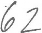
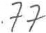
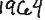

Lektor Hovdes norskkurs ved Sonans
Innholdsfortegnelse
Norrnt:
Hvaml 1
Folkediktning:
Olav og Kari 3
Draumkvedet 5
Smrbukk 9
Renessanse:
P. Mirandola; Om mennesket si verdigheit 14
Barokk:
T. Kinge; Sorrig og glde... 15
T. Kinge; Som den gylne sol... 16
D. Engelbretsdotter; Aftensalme 17
P. Dass; Herre Gud ditt dyre... 20
Klassisisme og senklassisisme:
J. H. Wessel; Gravskrifter og epigram 22
J. H. Wessel; Smeden og Bageren 23
J. N. Bruun; Norges skl 25
Romantikk:
H. Wergeland; Piken p anatomikammeret 26
H. Wergeland; Til Foraaret 27
J. S. Welhaven; Republikanerne 28
J. S. Welhaven; Diktets nd 30
Nasjonalromantikk:
M. Hansen; Luren 32
Poetisk realisme:
B. Bjrnson; Faderen 36
Ivar Aasen; Gamle Norig 39
Aa. 0. Vinje; Ved Rondane 40
Camilla Collett; Mot strmmen 42
Realisme:
A. Kielland; Bal/stemning 44
Naturalisme:
A. Garborg; Fr naturalisme 48
A. Skram; Karensjul 49
Nyromantikk/symbolisme/tidlig modernisme:
K. Hamsun; Fra det ubevisste... 57
S. Obstfelder; Navnls 58
S. Obstfelder; Jeg ser 59
Nyrealisme:
C. Sandel; Kunsten myrde 60
T. Jonsson; Liket 66
Tradisjonalistisk lyrikk og kamplyrikk + modernismekritikk:
R. Nilsen; Revolusjonens rst 68
Hartvig Kiran; Nykleholmen 69
A. verland; Tungetale fra parnasset 70
Modernisme:
H. Brli; Louis Armstrang 72
P. Brekke; Som i en kinosal 73
R. Jacobsen: Men vi lever - - 74
T. Vesaas; Naken 75
D. Solstad; Vi vil ikke gi kaffekjelen vinger 78
Postmodernisme:
I Calvino; Hvis en reisende en... (utdrag) 80
Realisme i dag:
B. Breiteig; Stockholm 81
Samtidslyrikk:
Nils-ivind Haagensen 90
Samisk litteratur:
Paulus Utsi; S lenge 91
N. A. Valkepaa; Vindens veier 91
Dansk og svensk litteratur:
M. Strunge; Natmaskinen 92
Goran Palm; Havet 93
Sonja keson; Aktenskapsfrgan 93
LITTERATUREN FRA NORRN TID TIL ROMANTIKKEN
,r
Den eldre Edda
Hvaml (ut'!rag)
Hvaml>> tyder <<talen til den hge1>. <<Den hge1> er Odin, og han gir her rd og reglar for korleis menneska br leve.
1 Augo du bruke 10 Betre br
fr inn du gjeng, du ber kje i bakken
i kott og i krom, enn mannevit mykje.
i kott og i krakom. D'er betre enn gull
For d'er uvisst vite i framand gard;
kvar uvener sit vit ei;- vesalmanns tryst. fre din fot.
11 Betre br
3 Eld han tarv du berkje i bakken som inn er komen enn mannevit mykje.
og om kne kulsar. Med lkare niste
Til mat og klede du legg kje i veg
den mann har trong enn ovdryldtje med l.
som har i fjell fare.
34 Omveg er jamt
" ' 4 Vatn og handduk til utrygg veil,
han ventar f, om midt i bygda han bur, nr til bords han vert beden. Men beinvegar gjeng
Syn godlaget fram, til den gode venen,
s greileg du kan, om han er langt av lei. med ord og attbeding.
36 Eitlite bil
Grannvar mann; er betre enn inltje,
til gjestebad komen, heime er kvar mann herre.
reier med andre talar. Har du geiter to
Lyder med yra og ein tausperra sal,
og med augo skodar, d tarv du ikltje tigge. veltenkt og fre var.
38 Vpna sine
Sl er den skal mann p vollen som seg mun vinne ikkje gange eit fet ifr.
fagre ord av folk. Uvisst er vite
End det er nr p vegom ute
ymist med det det sprjast kan etter spjut. du eig i annan manns barm.
1
1
Venen sin
skal ein vere ven, honom og hans ven. Men med uvens ven venskap halde hver kje fagna folk.
Veit du ein ven som vel du trur,
og du hj han fagnad vil f:
gjev han heile din hug og gva ei spar,
far og finn han ofte.
i kott ogkrom: i kott oghjrne tarv: treng
kulsar:frys
gr ann var : varsam sl: lykkeleg, salig mun:kan
vesalm.ann: fattigmann
ovdrykkje: altfor mykje drikke
76 Dyr fe; dyr frendar;
dyr sjlv det same. Men ordet om deg aldri dyr,
vinn du eit gjetord gjvt.
77 Dyrfe;
dyr frendar;
dyr sjlv det same.
Eg veit eitt som aldri dyr,
dom om daudan kvar.
Ener Ivar Monensson Egnund si omsetjing
tausperra sal: eit svrt fattigsleg hus eit fet: eit steg
fagna folk: skikkelege folk fagnad: godmottaking hug: sinn
sjlv det same: (du) psame mten dom om daudan kvai-: ettermlet til den einskilde
.....
S.p rs_m_ __l
.... ..... ... ..... -
, -
. ,,.,.
,,
_
Kva slags moral og grunnhaldning til livet blir formidla i desse leye-:Eeglane?
Kva f.qrtel dei ulike strofene deg om levemten og dagleglivet i det
norrne s mfunnet?
Passar nokon av <lesse levereglane i dag ogs?
Finn allitterasjon (bokstavrim) i strofene 10, 43 og 77. Kan du sj noko mnster? -
Olav og Kari
I
1.
Olav sat heime i tte r,
Tr meg inkje for nre - fyrr han ville si mo'eri sj.
P volden dansar mi jomfru. 2.
Det niende tek'e til lide, han ville til si mo'eri ride.
li
3.
11H f2'yrer du Olav, sonen min: hosse likar du gifta di?"
4.
"Sosso lik.ar eg gifta mi,
som eg drikk'e b' mj' og vin.
5. .
"Sosso likar eg gifta god,
som kvar den dagjen drikke jol.''
6.
"Eg sg henne Kari ride i gjr med elveside.
7.
Ho ha'e kje anna til hest
hell kvite bjnnen ho lika best.
8.
Ho ha'e kje anna til beisle-ring,
hell frnarormen ho sl.engde ikring."
9.
"Det mune dei p henne ljuge - gud n'e den som slikt trudde!" 10.
"Hosse kan graset p jordi gro, nr sonen inkje mc;>'eri t ru?; '
Ill
11.
Olav spring p gangaren gr, s hastig ri'e han derifr.
12.
Kari ho ser seg ut s vide,
s ser ho 'n Olav etter halline ride. 13.
Ho gjordest b' bl og bleik: "No ser eg Olav at han er v.reid!" 14.
Ho skodde si M nd, ho skodde sin fot, s gjekk ho sin herre syrgjeleg i mot: 15.
"Hyrer du Olav, herren min:
hot tiend fekk du hj mo'eri din?"
16.
"Ho sa ho sg deg ride i gjr med elveside.
17.
Du ha'e kje anna til hest,
hell kvitebjnnen du lika best.
18.
Du ha'e kje anna til beislering,
hell frnarormen du slengde ikring."
19.
"Det mune dei p meg ljuge - gud n'e den som slikt trudde!" 20.
"Hosse kan graset p jordi gro, nr sonen m inkje mo'eri tru?" 21.
Han la til henne med tynnyrtein, serkjen revna, og holdet seig.
22.
Han la til henne med tynnerkvast, serkjen revna, og holdet brast.
23.
"Olav, Olav, sl inkje leng'!
No hev eg fengji min hjartespreng."
24.
Han tok 'a Kari i sitt fang,
s bar han henne p silkjeseng.
25.
"Du dreg'e serken utor blodet, du sender han til mi mo'er!
26.
Du bed, ho tvr han rein'e og gifter kje dttar fleire!"
IV
27.
Kari kom seg til himmelriks dr, jomfru Mari slepte 'a innafyr.
28.
Jomfru Mari tukka fram ein stol: "Sit, liti Kari, og kvil din fot!"
29.
"Du tar inkje rydje sess fyr meg,
eg er inkje for god til stande fyr deg.
30.
Er er inkje trytt, eg kan vel st, - men m Olav himmerikje f?" 31.
"Sit, liti Kari, og kvil deg p - Olav han sko himmelrikje f." 32.
"Er er inkje trytt, eg kan vel st, - men m Olavs mo'er himmerikje f?" 33.
Jomfru Mari ho svara s:
Tr meg inkje for nre -
"Olavs mo'er kan kje himmerlkje f."
P volden dansar mi jomfru.
:.
.
. .
'
sJ ,_ b.e (f-Wr- f 1dFikk
1
I
'
i
I
ff Uln
ls n'e, d
; yrje
!)'r.mji!t m'ldet l,t1j ' SJDT
l tvr- v
"
Draumkvedet
Del I
1.
Vil du meg lyde, eg kveda kan om einkvan nytan drengjen, alt om 'n Olav Asteson,
som heve sovi so lengje.
2.
Han la seg ned om joleftan sterkan svevnen fekk;
vakna kje fyrrom trettandagjen, d folkje t kyrkjun gjekk.
Og det var Olav Asteson, som heve sovi so lengje .
3.
Han la seg ned om joleftan, no hev 'n sovi s lengje,
vakna 'kje fyrr um trettandagjen, d fuglane skoke vengjir.
4.
Han vakna 'kje fyrr om trettandagjen, d soli rann i lie,
d sala han ut fljotan folen, han ville t kyrkjun rie.
5.
Presten stend'e fyr altare og les upp lestine lange, Olav set seg i kyrkjedynni og tel'e draumane mange .
6.
Gamle mennar og unge dei gjev'e ette gautn'e, med' han Olav Asteson tele sine draume.
Del li
7.
Eg la meg ned um joleftan sterkan svevnen fekk,
vakna 'kje fyrrom trettandagjen, d folket t kjyrkjun gjekk.
Fyr mnen skin'e
og vegjine falle so vide.
8.
Eg hev vori meg opp med sky og ned-att med havet svarte; - den, som vil mitt fotspor fylgje, lr 'kje av blidom hjarte .
9.
Eg hev vori meg opp med sky
og ned-att med havsens grunne; - den, som vil mitt fotspor fylgje, lr 'kje av blidom munne.
10 .
Eg hev vori meg upp med sky og ned att p svarte dikje,
eg hev sett t heite helvite og ein deil av himmerikje. 11.
Eg hev fari ivi vigde vatnet og ivi djupe dalar;
hyrer vatn og ser det inkje, unde jordi so mune det fara. 12.
Eg er s trytt og ferde-mod, og inna s mune eg brenne;
eg hyrer vatn, og tr det inkje,
unde jordi s mune det renne.
13.
lnkje kneggja soten min, inkje gjydde min hund'e, inkje gol dei ottefuglan,' det tettest rrreg vera under. 14.
Eg var meg i auromheime i mange netter og tr,
det veit gud i himmerik hsse mang ei naud eg sg.
15. Eg kan noko av kvorom derfyr tikjest eg frod;
eg var longe i moldi moka, ha eg tolt den dauden god.
Del Ill 16.
Fysste eg var i uteksti, eg fr ivi tynnyr-mog;
sund'e gjekk mi skarlakskpe, og neglan' av kvar min fot.
For mnen skin'e,
og v.egjine falle s vide.
17.
S var eg meg i uteksti igjenom den tynnyr-ring: sund'e gjekk mi skarlakskpe og neglan' av kvar mi fing.
18.
Kjem eg meg t Gjallarbrui , ho heng'e s hgt i vinde; ho er 611 me gulle slegji
og saum i kvorjom tinde.
19.
Ormen hgg'e, og bikkja bit'e og stuten stend mitte p leii; tri er tingji p Gjallarbrui
og alle er gramme og vreide.
20.
Bikkja bit, og ormen sting, og stuten stend og stangar -
der slepp ingjen ivi Gjallarbrui, som feller domane vrange.
21.
Eg hev gjengji Gjallarbrui, ho er be bratt og lei;
vassa s hev eg dei Vsemyran', no er eg kvitt'e dei.
22.
Va'i s hev eg dei Vsemyran', der hev 'kje sta'i meg grunn; no hev eg gjengji Gjallarbrui med rapa moll i munn.
23.
Eg hev gjengji Gjallarbrui, og der var krokane p;
men eg tatte tyngre dei Gaglemyran',
gud bre den dei sko g!
Del IV
24.
S kom eg meg t votno dei, der isane brunne bl,
Gud skaut det i hugjen min:
eg vende meg derifr.
For mnen skin'e
og vegjine falla s vide.
25.
Eg var meg i auromheime, ingjen der eg kjende, berre ho sle gudmor mi med raude gull p hende.
26.
Surne for ivi Grimarsen og surne ivi Sklestrond,
men dei som f6r ivi Gjallarhylen, dei korne vte fram.
27.
S tok eg av p vetterstig alt p mi hgre hend:
Der sg eg meg til Paradis, det lyser ivi vene land.
28.
Der sg eg att'e gudmor mi; meg mune 'kje betre gange: "Reis du deg te Brokksvalin, der sko domen stande!"
Del V
29
Eg var meg i aurom heime i mange nttar og tr;
det veit Gud i himmerik, hossi mang' ei nau eg sg.
I brokksvalin
der sko domen stande.
30.
Der kom ferdi norante og den rei no s kvast:
fyre rei Grutte Grskjeggje alt med sitt store brass.
31.
Der kom ferdi norantil, det tatte eg vera verst:
fyre rei Grutte grskjeggje, han rei p svartan hest.
32.
Der kom ferdi sunnantil det tottest meg vera best; fyre rei sankte Sle-Mikkjel han rei p kvitan hest.
33.
Der kom ferdi sunnantil og den rei no so tvist:
fyre rei sankte Sle-Mikkjel neste Jesum Krist.
34.
Der kom ferdi sunnantil ho tottest meg vera tr;
fyre rei sankte Sle-Mikkjel og luren unde armen lg. 35.
Det var sankte Sle-Mikkjel, han bles i luren lange:
"Og no sko alle sline fram fyr domen gange!" 36.
Men d skalv dei synde-sline
som ospelauv fyr vinde,
og kvar den, kvar den sl der var, ho gret fyr syndine sine.
37.
Det var sankt Sle-Mikkjel, han vog i skle-vikt;
sa vog han alle synde-sline bort til Jesum Krist.
Del VI 38.
Eg sg meg einom drengjen det fyste eg vart ved,
liten smsvein bar han i fangje og gjekk i jordi til knes.
39.
Kjem eg med t manne dei, kpa den var bly:
hass arme sl i dessom heime var trang i dyre tid.
40.
Kjem eg med t manne dei, dei bar p gloande jord: Gud n'e dei fatige sline, som flutte deildir i skog!
41.
Kjem eg meg at bonno dei, dei stoge so hgt p glo: Gud n'e dei synduge sline, ha banna bort far og mor!
42.
Kjem eg meg t podda og ormen dei hoggje kvorare i sporde:
det var dei synduge syskjenbonni som gifte kvorare p jordi.
43.
Der mtte eg dei ormane tvei dei bit'e kvorare i sporde:
dei sto kinna i raude blodet, det var s tung ei vinne.
44.
Kjem eg meg t Syslehuset; der var trollkjerringan' inne.: dei sto kjinna i raude blodet, det var s tung ei vinne.
45.
Der er heitt i helvite, heitar he.li nokon hyggje.
er hengde dei 'pivi ein tjrukjetil og brytja ned-i ein presterygg'e.
Del VII
46.
Sl er den i f'sheimen fatige gjev'e sko:
han tar inkje berrftt gange p kvasse heklemag.
Tunga talar
1
vigde va tnet - elva i ddsriket feJdemod - trtt av reisen
sote - svart hest , her. helhesten
ottefuglan' - morgenfu lene auromhelm - den andre verden tr - langvarig , som gr langsomt
ogSanning svarar p d omedag\,
47.
Sl er den i f'sheimen fatige gjeve ku.
Han tar inkje sulum gange p hge Gjallarbru.
48.
Sl er den i f'sheimen fatige gjeve brau:
Han tar inkje r'ast i auromheime fyr harske hundegau.
48.
Sl er den i fisheimen fatige gjeve konn;
han tar inkje r'ast p Gjallarbrui fyr kvasse stutehonn.
50.
S;:el er den i f'sheimen fatige gjeve mat:
han tar iilkje r'ast i aurom.heime ariten fyr h.' e hell hat.
51.
Sl er den.i f 'sheimen
fa1tig .gjev ld'e;
.han tar inkje r'ast i aur:omheime fyr h g :kjeilar-br'e.
Del VIII
52.
Gamle mennarog unge,. dei gjeve atte gaum'e: . det var han Olav Astesoh,
no hev han frtlt sihe draume; Sta upp; du Olav A teson, som-heve sovi sa lengje.
kv6rjom -,hver og en
frod..::. vis,ku rm skapsrik
D,el II-I - Ferden til ddsriket
uteksti (avledning i3i; extasis +exitus) vanlige,b egrep i visjonsdJkt.
:'
.,..
legemet .
. 01:n tt, tornemo
,j:: .
'
om ora er
fcO
g =
, f l ge
"sjel nr.d
ger
. man lever
ha l e,
kjellarbr'e - trollg de store isbreene som er omtalt i strofe 24
Smrbuk
Der var engang en Kjrring som sad og bagte. Hun havde en liden Gut, han var saa tyk og fed og vilde saa gjerne have god Mad, og derfor kaldte hun ham Smrbuk; og saa havde hun en Hund de kaldte Guldtand. Ret som det var, satte Hunden i at gj.
<<Spring ud; du Smrbukken min, sagde Kjrringen, og se efter, hvem det er Guldtand gjr paa.
Saa sprang Gutten ud og kom ind igjen og sagde: Aa, Gud bre mig, der kommer en stor lang Haugkjrring, med Hovedet under Armen og en Sk paa Ryggen.
Spring under Bagstefjlen og gjem dig, sagde Mor hans.
Saa kom det store Troldet ind.
God Dag, sagde hun..
Gud signe! sagde Mor til Smrbuk.
Er ikke Smrbuk hjemme idag? spurgte Troldet.
Nei, han er i Skogen med Far sin og veider Ryper, svarede Kjrringen.
Det var Trold, det da! sagde Haugkjrringen; <rjeg har slig en fin liden Slvkniv som jeg vilde give ham.
Pip, pip, her er jeg! sagde Smrbuk under Bagstefjlen og kom frem.
Jeg er saa gammel og stiv i Ryggen, sagde Troldet, du faar smtte ned i Skken og tage den op selv.
Da Smrbuk vel var kommen ned i Skken, kastede Troldet den paa Ryggen og strg ud. Men da de var komne et Stykke paa Veien, blev Troldet trt, og spurgte: Hvor langt er det bort at sove?
En halv Fjerding, svarede Smrbuk.
Saa satte Troldet ned Skken ved Veien og reiste bortigjennem Smaaskogen for sig selv og lagde sig til at sove. Imens passede Smrbuk sig, tog Kniven sin, sprttede Hul paa Skken og smat ud, lagde saa en stor Tyrirod i Steden, og strg hjem til Mor sin. Da Troldet kom hjem og fik se hvad hun havde i Skken, blev hun flt sint.
Dagen efter sad Kjrringen og bagte igjen. Ret som det var, tog Hunden paa at gj.
Spring ud, du Smrbukken min, sagde hun, og se efter, hvad det er Guldtand gjr paa.
Aa nei, aa nei, det stygge Bstet da! sagde Smrbuk; nu kommer hun igjen med Hovedet under Armen og en stor Sk paa Ryggen.
lo
Spring under Bagstefjlen og gjem dig, sagde Mor hans.
God Dag! sagde Troldet; er Smrbuk hjemme idag?
Neimnd er han ikke, sagde Moderen, han er ude i Skogen med Far sin og veider Ryper.
Det var Trold det! sagde Haugkjrringen, for jeg har en vakker liden Slvgaffel jeg vilde give ham.
Pip, pip, her er jeg! sagde Smrbuk og kom frem.
Jeg er saa stiv i Ryggen; sagde Troldet, du faar smtte ned i Skken selv og tage den.
Da Smrbuk vel var kommen i Skken, slngte Troldet den paa Ryggen og lagde af Gaarde. Da de var komne et godt Stykke paa Veien, blev hun trt og spurgte: Hvor langt er det bort at sove?
En halv Mil, svarede Smrbuk.
Saa satte Troldet ned Skken ved Veien og gik opigjennem Skogen og lagde sig til at sove. Mens Troldet gjorde det, fik Smrbuk Hul paa Skken, og da han var kommen ud, lagde han en stor Sten i Steden. Da Haugkjrringen kom hjem, gjorde hun op en stor Ild paa Peisen, satte over en diger Kjedel, og skuld.e til at koge Smrbuk. Men da hun tog Skken og troede hun skulde slippe Smrbuk i Kjedlen, faldt Stenen ud, og slog Hul i Bunden paa den, saa Vandet randt ud og slukkede Varmen. Da blev Troldet sint og sagde: <<Om han nu gjr sig aldrig saa tung, skal jeg lure ham ligevel.
Den tredje Gang gik det akkurat ligesom de to andre; Guldtand begyndte at gj, og saa sagde Moderen til Smrbule Spring ud, du Smrbukken min, og se efter, hvem det er Guldtand gjr paa.
li
Saa sprang Smrbuk ud, og kom ind igjen og sagde: Aa Gud bre og trste mig! Det er Troldet som kommer igjen, med Hovedet under Armen og en Sk paa Ryggen.
Spring under Bagstefjlen og gjem dig, sagde Mor hans.
God Dag, sagde Troldet og steg ind igjennem Dren; er Smrbuk hjemme idag?
Neimnd er han ikke, sagde Moderen, han er ude i Skogen med Far sin og veider Ryper.
Det var Trold, det da! sagde Haugkjrringen, for jeg har en vakker liden Slvske jeg vilde give ham.
Pip, pip, her er jeg! sagde Smrbuk, og kom frem under Bagstefj len.
Jeg er saa stiv i Ryggen, sagde Haugkjrringen, du faar smtte ned i Skken og tage den selv.
Da Smrbuk vel var kommen ned i Skken, slngte Troldet den paa Ryggen og lagde af Gaarde. Den Gangen reiste Troldet ikke bort for sig selv og lagde sig til at sove, men hun strg lige hjem med Smrbuk i Skken, og da de kom hjem, var det en Sndag.
Saa sagde Troldet til Datter sin: Nu skal du tage Smrbuk og slagte hani og koge Sodd paa ham, til jeg kommer igjen, for nu reiser jeg til Kirken og beder fremmede.
Da Sjlfolkene var reist, skulde Datteren tage Smrbuk og sJagte ham; men saa vidste hun ikke rigtig hvorledes hun skulde gjre det.
Bi, saa skal jeg vise dig hvordan du skal bre dig ad, jeg, sagde Smrbuk; lg I-fovedet dit ned paa Krakken, skal du se.
/J_
Hun gjorde saa, hun Stakkar, og Smrbuk tog xen og hakkede Hovedet afhende, som det havde vret en Ky1ling. Saa lagde han Hovedet i Sengen og Skrotten i Gryden, og kogte Sodd paa Datteren, og da han havde gjort det, krabbede han op over Dren og drog med sig Tyriroden og Stenen, og lagde den ene over Dren og den andre op paa Peispiben til Troldet.
Da Folkene kom hjem fra Kirken og saa Hovedet i Sengen, tnkte de at Datteren laa og sov; men saa skulde de bort og smage paa Suppen.
Smager godt, Smrbuksodd! sagde Kjrringen.
Smager godt, Dattersodd! sagde Smrbuk. Men det lydde de ikke efter.
Saa tog Haugtroldet Skeen og skulde til at sin.age.
Smager godt, Smrbuksodd! sagde han.
Smager godt, Dattersodd! sagde Smrbuk paa Peispiben.
Da tog de til at undres paa, hvem det var som snakkede, og vilde ud og se efter. Men da de kom ud i Dren, kastede Smrbuk Tyriroden og Stenen i Hoved t paa dem og slog dem il'.Uel. Saa tog han alt det Guld og Slv som var i Huset, og da blev han vel rig; og saa reiste han hjem til Mor sin.
Pica della Mirandola
.
Pico delta Mirandola {1463-94-) studerte ved det platonske akademiet i Firenze. Der kom han i kontakt med ei rekkje nye skrifter som hadde komme med flyktningar fr Konstantinopel. Pico var apen for idear fr fleire l<antar og meinte at bde jdiske, egyptiske og kristne tekstar hadde noko viktig fortelje om mennesket. Sentralt hos Pica str mennesket si verdigheit. Mens mellomalderkyrkja var svrt oppteken av arvesynda,
ser Pico p mennesket som eit guddommeleg vesen med store positive
eigenskapar. Gjennom kunnskap og magi kan vi frigjere indre krefter og dermed framst som Guds vakraste skapningar. Picos ekstremt optimis tiske menneskesyn blir gjerne sett p som eit hgdepunkt i renessanse humanismen i Italia p 1400-talet. Kontrasten mellom Picos lovprising av mennesket og den tradisjonelle vektlegginga av vr syndige natur i kris tendommen, er s l a nd e.
Om mennesket si verdigheit, 1487 {utdrag}
[...)
Derfor valde Han ut eit menneske, eit verk av ubestemmeleg form, og plasserte han i midtpunktet av verda. Deretter talte Han til han p denne mten:
Vi har gitt deg, Adam, ikkje nokon fast bustad, inga eiga form for deg, inga gve som skal vere di spesielle, som du skulle mtte kunne opp leve som di eiga, ha som di eiga, ha i di varetekt som dine eigne den bustade11, den forma og dei gvene som du sjlv mtte kunne nskje. Dei avgrensingane som ligg i andre skapningar, er styrte av dei lovene som er skrivne ned av Oss. I samsvar med ditt frie skjn, som eg har overgitt deg
; til, er du ikkje- underlagd noko band, og du skal sjlv avgjere grensene
for kva som skal vere din natur. Eg har sett deg i midten av verda for at du derfr lettar e skal kunne sj deg rundt og oppdage kva som mtte fin
I
nast i verda. Verken av himmelen eller jorda har Vi gjort deg, og verken ddeleg eller uddeleg. Du er, lik ein dommar som er utnemnd av den grWlil at han er rleg, din eigen skapar og formar, det er deg gitt skape deg sjlv i kva som helst form du mtte nskje. Du kan vekse nedover til dei skapningane av lgare natur som er ville dyr. Du kan ogs vekse oppover driven av forstinga i sjela di mot dei hgare naturane som er guddomroelege.
, gjevmild a til Gud Faderen! den store og vedunderlege lykka til
mennesket! Det er gitt han oppn det han mtte velje, og vere det han mtte nskje.
[...]
Ved fdselen plasserte Faderen alle fr og spirer i mennesket som opp hav til liv. Dei fra som mennesket dyrkar, vil vekse og bere frukt i han. Dersom han dyrkar fr fr grnsaker, vil han bli ei plante. Om han dyr kar fr av kjensler vil han bli eit vilt dyr. Om rsjonelle fr, vil han bli eit dyr av himmelen. Om intellektuelle, vil han bli ein engel og son av Gud. Og om han ikkje er tilfreds med lagnaden til eit dyr, men finn sentrum av sin eigen einskap, da vil han, som ei nd samartsmelta med Gud og i ro i einsamt mrke med Faderen, som er over alle ting, st over alle ting.Kven vil ikkje fle undring over denne kameleonen s?m vi er? Eller fle meir undring over alle ting same kva det er?
[...]
Fr: Menneske/ si verdig heit . Omsett av John C. Anthony. Til nynorsk clV
Jan Gausemel.
Salmen er fra anden del af Kingos ndeligt sjungekor. Den udtrykker det jordiske livs uforudsigelige skiften , mellem lykke og ulykke. Melodien er en gammel visemelodi, en sarabande, fra omkring 1670. Sarabande-stilen med sin 3/4 takt d kkede op allerede i 1500-tallet og blev snart efter adopteret af barokkens komponister.
Sorrig og g(de de vandre til hobe
Tekst: Thomas Kingo, 1681
Sorrig og glde de vandre til hobe, lykke, ulykke de gange p rad, medgang og modgang hinanden tilrbe, solskin og Skyer de flges og ad, jorderigs guid
er prgtigt muld,
Himlen er ene af salighed fuld.
Alle ting hat sin foranderlig lykke alle kan finde sin sorrig i ba:nn,
tit er et bryst unde_r dyrebart smykke opfyldt af sorrig og hemmelig hann, alle har sit,
stort eller lidt,
Himlen alene for sorgen er lev.it: .
Vlde og visdom og timelig re, styrke og ungdom i blomstrende r hjt _over andre kan hovedet bre; falde dog af og i tiden forgr.
alle ting m endenopn,
Himmelens salighed ene skal st.
Dejligste roser har stindeste tame, sknneste blom.ster sin trende gift, under en roseilkind hjertet kan forne, for dog at skbnen er slsom og skift!
I vde-vand
flyder vart land,
Himlen har ene lyksaligheds stand.
Vel da! s vil jeg mig aldrig bemje, om ikke verden gr efter min agt!
Ingen bekymring skal kunne_ mig bje, intet skal gre mit hjerte forsagt'!
Sorrig skal d, lystigheds fr
blomstre p himmel-lyksaligheds .
(5
.,---
I hol3/l,C-1s
,,
MiC1
Fra Danrrtllrks or Norges Kirkers Forordnede
SOm dend Gyldne Sool frembryder
Psalme-Bog Kbh.
1690
Lov: lovprising.
ros
Vraa: krok, hull, ussel boli
Mde: mye,
trtthet, besva:r
Vce: smerte
SOm dend Gyldne Sool frembryder
Giennem dend kulsorte Sky. Og sin straale-Glands udskyder,
Saa at Mrk og Molm maa fly,
Saa min JEsus alf sin Grav, Og det dybe Ddsens Hav
Opstood refuld aff Dde,
Imod Paaske Morgen-rde.
Jeg kand finde i mit bierte,
At min Sil bar Trst der aff, Som kand lindre ald min smerte,
Naar Jeg mindes kun din Grav,
Og betnker hvor du laa Udi Ddens fle Vraa,
Og stood op med Kra.Ill og re,
Hvad kand strre Glde vre.
Ligger Jeg i syndsens Bye, Ligger Jeg i Armod ned, Ligger Jeg i sygdoms Kye,
Ligger Jeg i Uselhed; Ligger Jeg fortrngt, forhadt, Og aft' Verden slet forladt,
Skal Jeg Huus i Graven tage,
0 her er dog haab tilbage.
Du for synden engang dde, Der med er min synd betalt;
Armod, Uselhed og Mde,
Ja min sygdom bar du alt; Jeg ved dig opreyses skal, Og aft' Dd ens dybe Dal
Skal Jeg hovedet oprelte,
Ald min Nd kand det forlette.
Synd og Dd og alle Pile, Som at Satan skyde kand,
Ligger brudte ved din hvile Udi Gravens mrke Land!
Der begrov du dem, og gav
Mig en sikker Trste-stav,
At ved din opreisnings re Jeg skal seyer-Palmer bre.
Tak, 0 store Seyer-HErre,
Tak, 0 Livsens Himmel-Helt, Som ey Dden k1:111d' indsperre
I det Helved-mrke Telt! Tak fordi at op Du stood Og fik Dden under Food!
Ingen Tunge kand dend Glde
Med tilbrlig Lov udqvde.
Som Guds Sn Jeg dig nu kiender. Og seer din Aldmgtighed,
Din opstandelse indspender
Hvad Jeg troer og hvad Jeg vee<.1, Mig til saligbed og haab,
Ja min Christendommes Daab I din Dd er som et Billed Og opstandelse fremstilled.
Du til Livet mig skal vekke
Ved din stor' opreisniogs Kraft'!! Lad kun Jorden mig bedekke,
Orme lre ald min safft, lid og Vand opsluge mig! Jeg deri dend Troe til dig,
At Jeg skal til Liv opstande Udaff Ddsens grumme Lande.
Sde JEsu, giv mig Naade Ved din gode hellig Aand,
At Jeg saa min Gang kand raade Og Veyledes ved din haand,
At Jeg ey skal falde hen Udi Ddsens svelg igien,
Hvor atr du mig engang rykte, Der d11 Dden undertrykte.
Tak for ald din Fdsels Glde, Tak for dit det Guddoms Ord,
Tak for Daabens hellig Vde, Tak for Naaden paa dit Bord,
Tak for Ddsens bittre Vee, Tak for din Opstandelse,
Tak for Himlen du har inde, Der skal Jeg dig see og finde.
Dorthe Engelbretsdotter
Afften Psalme
1.
DAgen viger og gaar bort, Lufften bliffver tyck og sort,
Solen har alt Dalet Plat,
Det gaar ad den mrcke Nat..
2.
Tiden sagte lister sig,
Glaset rinder hastelig, Dden os i Hlen gaar, Evigheden forestaar.
3.
Nu een Dag jeg eldre bleff, Det er som mit Tancke-Breff,
At jeg med min vandrings Staff, Nrmer helder til min Graff.
4.
Ret nu blincked SolensLius, Nu er skwnmelt i hv rt Huus, Saa forandds alle ting,
Til vi gir det sidste spring.
5.
Kire Sil kom det i hu,
Og der hos bekieO:dt kun nu, At du som it Adams Barn, Velter dig i Synd og Skarn.
6.
Denne Dag est du ey qvit At du jo har faldet tit,
Reys dig og med Bn gack hen Til din Gud i Himmelen.
It
7.
Beed om fiaade, og gir Bood, Aabne dine yens Flood,
Slip ham icke med dit skrig
Fr hand faar Velsignet dig.
/
8.
Nu min JEsu, Silis Skat, Tag her Lossament i Nat,
See jeg har it Hvile-sted
J mit Hierte til dig red.
9.
Lad din stercke Engle-vact Paa mit Leye giffve act,
At min Sffne-tunge Krop Skadis ey aff Sathans Trop.
13.
Alt paa ham i mange Led, Naade-IGlden flyder ned,
At det Kongelige Blood
se Trst aff samme Flood.
14.
Lad ham Leffve mange Aar, Til hand mt aff Verden gaar,
Giff ham her al Fryd og Fred
Siden Evig Salighed.
15.
De som ere i hans Raad, HErre styr seif deris Daad,
At de Trolig een og hver Raader det som tienligst er.
10.
Saa jeg arme Orme-Seck Jcke veckis op med skreck,
Min Hosbond med Brn og Slect, Tag og i din Vare-tect.
11.
Vr din Menigheds forsvar, Ordsens Tienere bevar,
At de rnaa som Hyrder troo, Fde dine Faar i roo.
12.
Alle Kongers Konge bold, Vr vor Arffve Kongis Skiold,
Hand forlader sig paa dig,
Giff ham hvad hand nsker sig,
16.
Stil den Siugis Hierte-vee, Tenck paa de Bedrffvede,
Vr de Faderlsis Trst, Og giff act paa Enkers Rst.
17.
Til een blund staar nu mit sind, Men frend jeg slumrer ind,
Vil jeg hos mit Hvile-rom Staa og tencke mig lit om.
18.
At det er saaledis fat,
Jeg eengang den lange Nat Skal iblandt de ddis Tal, Soffve i den mrcke Dal.
19.
Fire Fiele er min pragt, Hvor udijeg bliffver lagt,
Med it,, Lagen og lit meer,
Eyer icke saa en Feer.
20.
Alle Verdslig Ting forgaar,
Jeg til Herlighed opstaar,
Naar G1.1d ved Basunens Lyd,
Kalder mig iil Evig Fryd.
Tekstene er trykt etter Samlede skrifter, v. K. Valkner (1955).
-I
Petter Dass (1647-1707)
hver berg og tinde skal slett forsvinne, men Herrens minne til tusen sinde skal stige.
Herre Gud! Ditt dyre navn og re
1
Herre Gud! Ditt dyre navn og re over verden hyt i savn m vre, og alle sjele, og alle trelle
og hver geselle de skal fortelle din re.
2
Det er smukt og kosteligt at hre,
at man Gud sin' lebers plikt mon gjre; de dyb' avgrunner, de grnne lunder skal Herrens vunder hver tid og stunder utfre.
3
Om seg folk anstille vil s slemme, Guds navn at tie still og glemme, s skal dog stene og trre bene
ei vre sene hans navn, det rene at fremme.
4
Ja, fr Gud sin re skal forlise,
fr skal hav og grummen hval ham prise, samt og tanteien, som lper leien, stenbit og seien og torsk og skreien,
og nise.
5
Gud er Gud om alle land l de, Gud er Gud om alle mann var dde, om folk forsvimler, i Herrens himler utallig vrimler, som slr p cimler hin sde.
6
Skulle Herren fattes bram og svenne? Se, ti tusen str for ham og tjene,
ja tusen gange ti tusen mange,
hvis smukke sange med klang kan prange der henne.
7
Ti for Gud skal alle kne seg bye, de som bor i himlene hin' hye, og de p jorden, i sr og norden,
samt djevlers orden, som dmt er vorden tll mye.
8
Hyen hall og dyben dal skal vike, jord og himmel falle skal tillike,
9
Vil de gamle vre stiv' og sove, da skal brn i moders liv Gud love;
De halte, lamme, ml-lse, stamme
gjr og det samme, de grumme, gramme og grove.
10
Nr jeg meg fra topp til fot betrakter, ingen lem p meg for god jeg akter, var de s smukke som silkedukke,
de jo skal bukke med ydmyk' sukke og fakter.
11
Men o mennesk' tr du det ve! mene, at Guds navn skjer rett og skjel alene, for prest og bonde med blotte munne ham love kunne? nei, ingenlunde
det ene.
12
Herrens navn hos oss p jord kan ikke helllges ikkun med ord og nikke!
Nei, hvor du svever, og hvor du strever, se til du lever, som Guds ord krever
til prikke.
13
La ditt lys for folket smukt s brenne, at enhver din dyd og tukt kan kjenne!
Lev el begjrlig, el folk besvrlig
lev from og rlig, mot hver mann kjrlig til ende.
14
Hat alt det Gud i sitt ord selv hater, at vellysten deg p jord ei skader! Sky synd og lyder, som Gud forbyder, elsk tukt og dyder, som deg bepryder og bader.
15
Men vilt du p syndens vei henstige, og fra dyden blues el at vige,
da dine lemmer Guds navn beskjemmer, Guds nd bortskremmer, og ei forfremmer Guds rlge.
16
Men, o Gud! forhindre slikt at blive! Hva som er ugudellgt fordrive!
At vi vr' tider mot synden strider, nr tiden lider, hos deg omsider at blive!
(Fra Katekismesanger, fr 1698)
Ordforklaringer
savn: ry
geselle: hndverkersvenn
at man Gud sin' lbers plikt osv.: at man priser Gud I tale
vunder: under
grummen hval: den ville hval
tanteien: makrellstrja
leien: skipsl1;iia
forsvim/er: mister fotfestet eim/er: cymbaler, bekken bram: prakt
vorden: blitt
tillike: p samme vis
slett: rett og slett
til tusen slnde: tusen ganger
gramme: vrede
for prest og bonde: bare fordi prest og bonde
lkkun: b.are
at vellysten: sllk at veU.ysten
bader: gagner
blues eiat vlge:- skjemmes Ikke for vike unna
JA
Fra Votre Serviteur otiosis (Kbh. 1784). Her fra Diete Gyld., Oslo 1965
Johan H. Wessel
Gravskrifter og epigram
Den, som aldrig turde drikke, Turde aldrig noget stort; gte Helte Jade ikke
Vandet skylle Modet bort.
Cborus.
Krigeren, for han er Helt,
Takker Vinen i sit Telt.
Digter ens Gravskrift over sig selv; Han aad og drak, var aldrig glad, H_ans Stvlehle gik han skieve; Han ingen Ting bestille gad,
Tilsidst han gad ei heller leve.
..
Smeden og bageren
honett: anstendig, skikkelig
feltskjr: lege
..
hl t: til, den a.iu:!te sida/det hin,sidige
Der var en liden by, i byen var en smed,
som farlig var, nr han blev vred.
Han sig en fiende fik; (dem kan man altid rn.,
jeg ingen har, det g
min leser ligesl\!)
Til uheld for dem begge to de trffes i en kro.
De drak Geg selv i kro vil drikke, for andet k<muner jeg der ikke.
Anmerk dog, leser! dette:
Jeg immer gr p de bon tte.) Som sagt, de drak,
og eftet mange skjeldsord, hidsigt snak, slr smeden fienden p planeten.
S sirkt var dette slag;
at han s ikke dag,
og har ei siden set'en.
Straks i arrest blev smeden sat.
En feltskjr r d ,n d.de fal,
og om en, Voldsom d9.Jd attest bensender.
Den mordere forhres og belrjendet. Hans bA.b var, at han skulde hisset gA., og der forladelse av sin modstander f.
Men hr nu lier! netop dagen,
fr dom skal gft i sagen,
fremtriner fire borgere
sa
for dommeren; den mest veltalende ham tiltalede:
Velviseste!
Vi ved, pA byens vel De altid se; Men byens vel beror derpA.,
at vi vr smed igjen m ta..
Hans dd opvekker jo dog ei den dde?
Vi aldri fflrigjen s duelig en mand.
For hans forbrydelse vi aitfor grusomt bde, om han ei hjelpes kan.>> -
Betnk dog, kjre ven! der liv for liv m bdeS.>> -
Her bor en arm udlevet bager, som pokker snart desuden tager.
Vi har jo to, om man den ldste tog av dem?
S blev jo liv for liv betalt. -
((Ja, sagde dommeren, det indfald var ei galt, Jeg sagen at opsette ndes;
ti i s vigtigt fald man m sig vel betnke,
Gid vres smed jeg livet kunde skjenke! Farvel godt folk! jeg gjr alt, hvad jeg kan.
Farvel velvise mand! -
Han blacfer i sin lov omhyggelig; men finder intet der for sig,
hvorved forbuden er, for smed at rette bager; han sin beslutning tager,
og s a,fsiger denne dom:
(Hvem, som vil hre den, han kom!) i<Vel er grovsmeden Jens,
for a1 undskyldning lns,
og her for retten selv bekjendte,
han Anders Pedersen til evigheden sendte; men da i vores by en smed vi ikkun have, jeg mtte vre rent av lave,
ifald jeg vilde se hai:n dd.
Men her er to, som bager brd.
Ti kjender jeg for rett:
Den eldste bager skaJ undgjelde det;
og for det skjedte mord med liv for liv br bde, Til velfortjente straf for sig,
og ligesindede til afsky og til skrk.
Den bager grd Guds jammerlig, da man ham frte vk.
Moral.
Beredt til dden aitid vr!
' Den kommer, nr du minst den tnker nr.
NORGES SKAAL
For Norge, Kjmpers Fdeland. vi denne Skaal vil tmme,
og naar vi frst faa Blod paa Tand,
vi sdt om Frihed drmme;
clog vaagne vi v op engang
og 'bry de Lnket, Baand o.g Tva::n:g;
for Norge, Kjiper'8.F de land,
V'-i denne Ski;t l udtmme ,I
Hver tapper Helt. blandt Klipper fd,
vi drikke vil til re;
hver rlig Norsk, som Lnker brd,
'-- skal evig elsket vre!
Den vl_fege Livvagt Vaabe!ih ag
forklal!er trolig Nerdmands Sag.
Hver rlig Norsk, blandt Klipper fd,
vi drikke nu til re.
'
En Skaal for dig, min kjkke Ven,
og for de norske Piger I
Og har du een, saa Skaal for den, og Skam faa den som sviger !
Og Skam faa den som elsker Tvang og,h a:der Piger, Vin og Sang.I
En :Slc aal for dtg-, :m n kjkke Ven,
og for de norske Piger!
Og nok en S.kaal for Nor es Fjeld,
for Klipper, Sne og Ba , l
Hr Dovres Echo raabe: Held!
for Ska ilen tre Gang takker.
Ja tre Gang tre skal' alle Fjeld. for No.i;ges Snner raa:be IJeld I Endnu en Skaal for dig mit Fjeld,
for Klipper. Sne og Bakker I
Johan Noi-d hl Bruun.
1
:L5
PIGEN PAA ANATOMIKAMMERET
(Skrevet i 1837 av Henrik Wergeland)
-- -- Jo det er Hende! 0 lys hid!
Og slip ei Kniven end paa glid
i denne Armes Hjerte!
0, der er rdsom Vittighed
i Lampens Blik, som stirrer ned paa denne dde Smerte.
Saa kold, dengang den aanded, saae den stolte Verden jo derpaa?
Og frkke ine skar det Slr igjerinem tidligt, soni den stakkels Piges Fattigdom
af gyldne Dr.rn.me b&r.
Som Blomst i Isen frosset ind jeg seer et Trk paa denne Kind;
var
som vel jeg br at kje;;nde. Thi Fryqeit imin Barndomsleeg fr altfo, r hit min Skulder steeg
-- o den ikke Hende,
Tvertsover boed' Hun for os, i Arm:od fdt som i sit Mos
paa Taget Stedmotsblomrp_en. Fornemme Folk kun fatted svrt, at Blod saa fagert og saa skjrt
afFattigfolk var konunen.
Ak, mangt sligt Aasyn clog jeg saae som Maanedsrosens Pragt forgaae,
som Sommerfuglestvet!
Dem Skjebnens Haand for haardt vel tog og Syndens Spor dem overjeg
som Sneglens Sliim paa Lvet.
--l
,,
Fra Morgenbladet.
Chra. 1845
forr: V
fyrrige: livlig, ildfull
patriark: eg . sta,mfar, gammel,. rverdig mann
Tilforret
0 forr! Forr! redd meg!
Ingen har elsket deg mmere enn jeg.
Ditt frste gress er meg mer verd enn en smaragd. Jeg kaller dine anemoner rets pryd,
skjnt jeg nok vet, at rosene ville komme.
Ofte slynget de fyrrige seg efter meg. Det var som vre elsket av prinsesser.
Men jeg flyktet: Anemonen, forrets datter, hadde min tro.
0 vidn da, anemone, som jeg fyrrigen har knelet for! Vidner, foragtede lvetann og lerfivel,
at jeg har aktet ed r mer .e nn gull,- fordi dere er forrets barn!
Vidn, svale, at jeg gjorde gjestebud for deg som for et hjemkommet fortapt barn, fordi du var forrets sendebud.
Sk disse skyers herre og be, at de ikke lenger m ryste nler ned i mitt bryst fra deres kolde bl .pninger.
Vidn, ga e tre, hvem jeg har dyrket som en guddom
og hvis knoppet jeg hvert forr har talt ivrigere enn perler!
Vidn du-, som jeg s ofte har omfavnet
med n snnesnnssnns rbdighet for sin oldefar. Ah ja, hvor titt har jeg ikke nsket . vre en ung lnn av din uddelige rot og blande min krone med din!
Ja, gamle, vidn for meg! Du vil bli trodd. Du er jo rverdig som en patriark.
Be for meg, skal jeg se vin p dine rtter og lege dine arr med kyss.
Din krone m alt vre i sitt fagreste lysgrnt, dine blade alt suse der ute.
0 forr! den gamle roper for meg, skjnt han er hes. Han rekkersine armer mot himlen, og anemonene, dine blyde barn, kneler og ber at du skal
re dde meg - meg, der elsker deg s mt.
.,
lr
Johan Sebastian Welhaven REPUBLIKANERNE
Ved Barriere de la Sante
ligger en ydmyg liten Kafe.
En gammeldags Stue er all dens Plass, der er ei Forgyldning, der brukes ei Gass. Den har en Skning, der sjelden brister, af Etudianter og smaa Artister;
og kommer ei disse, da eier den dog en stillere' G:iest i sin dunkle Krog.
Der vandrer omkring i den straalende Stad en skibbruden Flok, der aldrig er glad;
der mder dem Ingen med Smil eller Nikk, de frdes i Svrmen med slukkede Blikk. Pauvres honteux! de sge et Hjem;
en ringe Kafe er det beste for dem.
Nu er det Midnatt, der sidder en Gjst endnu ved sit Bord med en Sukkervandsrest. Hans Ansigt er falmet, haris Dragt er grov,
hans Linned er reent og hans Hnder er smukke, han sttter sit Hoved, som om han sov -
der er saa tyst; man kan hre ham sukke.
Dog, mens han sitter i dette ly, pner man dren med bulder og gny; det er en skare av ungersvenner
med sterke mustasjer, med yne, der brenner:. De flyter og nynner en smukk melodi,
en Sang av den stumme fra Portic{ Ndurrit har i aften fra scenen vakt de fyrige toners koglende makt;
de ruller den jublende flokk.gjennom blodet nu har den igjen republikken i hodet
De setter seg matte; men atter fra stolen springer der en og bestiger et bord,
han sier med rungende, vingede ord: "Forsamling giv akt, jeg vil tale om Polen!"
Det var en tale som flammende krutt, o, der ble stormet og spiddet og skutt. De franskes konge og rd og kammer,
gilde opp med Kreml i de samme flammer;
men frem av de kolde russiske grave steg atter en hr av Napoleons brave; de kjempede med, de rystede jorden
med faner som storm, med rner som torden.
P Warschaus murer stod atter Fama og leste for verden et fransk proklama, at nu var historiens siste knute
lsnet for evig og stykket ute. Den frie mann og den frie kvinne ble proklamert i alle vinde;
Europas kongress forsamlet seg best
i Polens skjd mellom st og vest,
i Warschau reistes kongressens salong,
og dertil en sttte for Saint Simon.
-4
Da jublede flokken, og atter det ld: "Champagne, garcon, p tyrannens dd!"
Men just da de lste den skummende drikk s de en fremmed med stussende blikk
ti proppen fly mot den selsomme mann der satt i en krok med sitt sukkervann.
"Drikk," ropte de alle, "Champagnen er god, vrt beger er hellig, drikk, har du mod!"
"Jeg drikker ei vin, om sterk eller mild, dens sdme er vammel, jeg hater dens ild. Jeg sitter med gru p mitt livs ruin,
mitt beger er tmt; jeg drikker ei vin."
Da ble det y, de kalte ham trell
de ropte p skjensel, p hevn og duell;
Han viste sitt bryst- hvor det var skrammet, av streifende kuler, av klinger rammet! -
"I drer; det er Ostrolenkas merke.
Har I vel fattet, hvor det kan verke?
Der er ingen lise for denne kval;
den kan ikke blunde for sladder og pral. Der er ingen gjkk s vindig og svag, han minsker seg jo med mitt dypeste nag, min heteste bnn, mitt eneste gode,
er kommen p lallende tunger i mode. - Til side, drenge, giver meg rom!
Himlen har stjerner, natten er stum."
De s p hverandre. Han vandret sin vei. De hadde Champagne, men rrte den ei.
(1838)
ORDFORKLARINGER:
Etudidanter - studenter
Povrcs hontcux -stolte fattige.
Gny-brk: '"
Den stwnme fra Portici - Et operastylcke fra Napoli Nourrit - Kjent operasanger p 1800-tallet
Brave - modige
Warschau - Warszawa ,
Fama - Ryktets gudinne i gresk mytologi Saint-simon - Fransk sosialistisk tenker
Ostrolenka- I slaget ved Ostrolenka knuste russerne den polske selvstendighetskampe"!I i 183l Lise - trst
Pral -skryt
Digtets Aand
J.S. Welhaven
Hvad ei med Ord kan nvnes i der rigesce Sprog,
det Uudsigelige
skal Digtet rbe dog.
" Af Sprogets strenge Bygning, af Tankeformers Baahd stiger en frigjort Tanke,
og den er Digtets Aand.
Den boede i Sjlen
fr Stcophens Liv blev til, og Sprogets Malm er blevet
flydende ved dens Ild.
Den gjennerntrnger Ordet
lig Duft, der stiger op af Rosentrets Indre i den aabnede Knop.
Og s j n.,,_ den ei k n prges i Dig(e T anker,ad,.
den er dog der tilstede som Duft i Rosenblad.
Glem da den gamle Klage, at ingen Kunst fo.rmaaer at male Tankefunken, hvoraf et Digt fremstaaer.
Thi hvis den kunde bindes og slres af paa Prent,
da var i denne Skranke dens Liv og Virken endt.
Den vil med Aandens Frihed svve paa Ordets Klang; den har i Digtets Rhythrner en stakket Gjennemgang,
En Gjennemgang til Livet i Lserens Bryst;
der vil den vaagne atter i Sorrig el!er Lyst,
.,
JC>
Og nres og bevges og blive lig den Ild, der l.aac .i Digtersjlen,
fr Str pl ns Liv blev til.
Kun da bevarer Digtet sin rette Tryllemagt, det Uudsigelige
" er da i Ordet lagt.
Bct r.agt den stille Lykke dcrgjt en Digter v.tqi,, meris .A,anden i hans Sange svver fra Barm til Barm.
Lad kun ,hans Rygte hves mod S\<y af Dgnets Vind, det er dog ei' de'n .sa nde Kvgelse fot hans Sirid.
Men naar hans Tankebilled,
med eller uden Ry, tinder et lutret Indre, og fdes der paany -
0, bring ham da et B dskab
om dette Aandens Bliv; thi dermed,er .der lovei: hans V k et evigt Liv.
.
J/
Fra Skizzerede Natlonale Fortllinger i Breve't fra Carl Pl,ilmann (l819). Her fra Norges Nasjonallitteratur Gyl ., Oslo 1976
Helvetia: Sveits
ensemblet: helheten
arkadisk: landlig, idyllisk (jfr. Arcadia)
186
Luren
Brte i Gudbrandsdalen
Jeg kunne ha lyst til, kjre venn, datere dette brev fra det egentlige Nor ge,- ti s ekte nordisk har ingen annen egn forekommet meg vre, - s stolt og dog s mild. Hvorfor skulle vi dog evig beundre hine Helvetiens pro spekter? hvorfor aldri pryde vre vegger med fedrelandske utsikter! Denne egn forekommer meg st ved siden av det skjnneste sveitslandskap. Ikke frapperes man av noen viltbrusende foss - eller av loddrett steile klipper - eller av svimmeldype avgrunner; men emsemblet, min venn - tonen, som dere malere kaller det, - er s hy, s ubeskrivelig deilig.
I stedet for beskrive deg min tilbakereisefra Nordlandene vil jeg, me ns jeg dveler for sist gang i denne yndige dal iblant dens elskverdige beboere, fortelle deg et lite eventyr, som jeg her har opplevd, og som med all sin enkelhet forekommer meg usigelig rrende. Til den ende m jeg g til bake i min fortelling til den aften da jeg p min oppreise frste gang betrdte da len. Etter en temmelig besvrlig fotreise stod jeg ved solens nedgang p hyden, hvorfra med overraskende ynde dalen plutselig pnet sin favn for mitt blikk. Jeg lot bonden, der frte min klvsalte hest, dra foran, og satte meg p et fjellstykke for beskue den blomstrende dal. Bekkenes rislen, fuglenes sang og de gressende kyrs klokker ld harmonisk i mitt pne re. Skyggene ble lengre nedenfor meg - og minte meg 9m gfi ned. Mens jeg klatret ned ad fjellet, ld fjernt enkelte dype toner fra l en, den arkadiske
79
kjempehaug:
gravhaug
lur. Etterhnden ble disse sterkere, og jeg kunne tydelig hre enkeJte. ord igjennom tonen. I en overraskende nrhet svarte en annen lur med et pr av disse simple akkorder, der s klare strmmer ut fra dette instrument. Jeg var hytidelig stemt. Neppe stod_jeg i dalen, fr en midde laldrende- dl i fin nasjonaldrakt kom meg i mte og rakte meg sin hnd. Velkommen til oss landsmann! Ta til takke med det jeg kan skaffe deg! sa han i sin fyndige, trofaste dialekt, og vi gikk fremad imot g..rden, der l midt i deo smilende dal. Da vi kom inn, ble hysetet anvist meg, og mens hans vakre kone frem satte en nydelig aftensmat av mel, tynnbrd og egg, fikk jeg tid til betrakte den renlige simpelhet og tekkelige velstand, der foren(e seg i den rommelige nystue. Thord, det var min verts navn, var en hy, bredskuldret mann med et merkelig ansikt, der, jeg vet ikke hvorledes, forekom meg ligne de antikke tresnitt av vre norske'konger. Et par beskjedne sprsml om vr korige og om det nyss opplste storting osv. unnslapp ham nesten imot hans vilje, - og jeg s hvorlunde nysgjerrigheten kjempet med frykten for uleilige den
ord igjennom tonen. I en overraskende nrhet svarte en annen lur med et pr av disse simple akkorder, der s klare strmmer ut fra dette instrument. Jeg var hytidelig stemt. Neppe stod_jeg i dalen, fr en midde laldrende- dl i fin nasjonaldrakt kom meg i mte og rakte meg sin hnd. Velkommen til oss landsmann! Ta til takke med det jeg kan skaffe deg! sa han i sin fyndige, trofaste dialekt, og vi gikk fremad imot g..rden, der l midt i deo smilende dal. Da vi kom inn, ble hysetet anvist meg, og mens hans vakre kone frem satte en nydelig aftensmat av mel, tynnbrd og egg, fikk jeg tid til betrakte den renlige simpelhet og tekkelige velstand, der foren(e seg i den rommelige nystue. Thord, det var min verts navn, var en hy, bredskuldret mann med et merkelig ansikt, der, jeg vet ikke hvorledes, forekom meg ligne de antikke tresnitt av vre norske'konger. Et par beskjedne sprsml om vr korige og om det nyss opplste storting osv. unnslapp ham nesten imot hans vilje, - og jeg s hvorlunde nysgjerrigheten kjempet med frykten for uleilige den
trette gjest. Men n kunne den aldrende kone ikke lenger bare seg ..,. og gjorde meg sprsml p sprsml; og skjnt verten skjente p henne; fordi hun, sa han, plaget meg, - s jeg dog tydelig at han gledet seg ved enhver nyhet jeg fortalte. Etter en halv times forlp hrte vi kyrnes brling under vinduet, og straks derp trdte en pike inn hvis utvortes sterkt frapperte meg, skjnt jeg i tussmrket ikke rett kunne betrakte henne. En hy rank vekst, - et blekt, betydningsfullt ansikt, - svmmende, bl yne, og et gult,
fritt blgende hr falt meg straks i yet. Faderens skarpe blikk slo hennes imot gulvet; men moderen sa i en snakksom tone: Koni hit, Ragnhild, og
hils p den fremmede, ban er fra Christiania. Med en rolig, alvorlig mine hilste hun meg, ikke med den nyst utfoldede ms unnseelse, men med en viss holdning og anstand, som forundret meg. Hun vakte en besyi:iderlig, halvt smertelig, halvt behagelig fornemmelse hos meg, og jeg flte en ufor klarlig interesse for piken. Jeg grep det pskudd betrakte kveget - og bad henne flge meg og vise meg det. Alt hva hun sa, rrte meg ved den klare, blte aksent hvormed hun talte sitt dlesprk, og den bestemthet med hvil ken hun valgte sine uttrykk. Hun bl synlig forlegen over den oppmerksom het hvormed jeg betraktet henne, og frte meg snart inn igjen til faderen, der ventet meg med lkruset i hnden.
Ved lyset ble jeg var noen bker p. en hylle, og det gledet meg imellom dem finne vr Snorre. Jeg innlot meg i samtale med Thord om den gamle historie - og forbausedes ved hans bekjentskap med samme. Uten pral for talte han meg i samtalens lp at han nedstammet fra den hrfagre Harald, og at hans slekt hadde holdt seg ublandet. Jeg vet ikke hvorfor denne etterret ning gjorde et s srdeles inntrykk p. meg; ikke sannelig, at jeg skulle bre strre innvortes aktelse for en konge enn en bonde, men sikkert fordi jeg liksom s den leng st. hensmuldrede store Harald st for meg i sin tling. - Min vert lot til at forst. min fornemmelse- og vendte samtalen beskjeden p. andre ting.
Temmelig sent forlot han meg, og jeg kastet meg urolig frem og tilbake p mitt leie. De runne dager steg opp i min sjel, og jeg flte en engstelig glede, som den, hvormed man betrr en kjempehaug fra hedenold. Da ld en lur klart i natten og vekket meg av mine drmmer. Jeg sprang til vinduet, pnet det - og hrte n grant fra den nrliggende haug igjennom tonen,e de ord:
80
Hosdan lever Litan? og straks svartes fjernt fra med luren: Litan lever bra. Jeg kan ikke si hvor besynderlig det forekom meg. Min nysgjerrighet tillot meg ingen ro. Alt ble stille, og utlmodig oppebiet jeg morgenen, for hos min vert f opplsning p denne gte. Neppe var han trdt inn til meg, fr enn jeg, mens Ragnhild beredte frokostbordet, begynte sprre, hvo der her blste lur om atten. Men plutselig holdt jeg inne; ti Ragnhild ble med ett blek som dden og kastet et blikk p meg, - s bnnlig, s fortvilet, s dende! at jeg tusen ganger fortrt mitt sprsml. Til min beroligelse svarte Thord at han intet hadde hrt, og at det mtte vre gjeterne p de omliggen de setrer. Meri Ragnhild snek seg vaklende ut, idet hun gav meg enda et usi- gelig rrende yekast. . .
Skyssen var kommen, klvsalen omspent, - og med all min nysgjerrighet, all min deltagelse, mtte jeg utilfredsstilt dra bort. Hva hadde jeg gitt for et yeblikks enrom med Ragnhild, det jeg dog visst ei hadde hatt mot og indisk resjon nok for benytte til utfritte henne.
P min hele reise stod denne lille begivenhet meg uavlatelig for tanken, og det gjorde meg ondt nok, da jeg for omtrent tte dager siden p min hjemtur kom i nrheten av dalen, at jeg ikke kunne gjre en omvei for atter beske Thord. Du vet min bestemmelse var ile den korteste vei til Christiania. For tte dager siden alts reiste jeg omnatten over fjellet. Min skysskar var en vakker, ung mann av et usedvanlig dannet vesen- men syntes meget ned slagen. P mitt sprsml fortalte han meg at han hadde vrt skolemester - men n tjente som grdskar. Jeg lot ham fre hestenforan meg over fjellryg gen, og gikk langsomt etter i noen avstand. Plutselig hrer jeg ham synge igjennom hnden henimot fjellet, og jeg gjenkjente tydelig den samme melo di, som jeg en gang hadde hrt igjennom luren. Jeg blir oppmerksom, og fra det fjerne mter mitt re en lengre; klagende lurstemme. Som et lyn var jeg oppe og stod ved siden av karen. Han syntes forlegen og ble det enda mer da jeg trengte inn p ham for f sammenhengen vite. Nettopp gikk mnen opp, og jeg skimtet i bergklften en liten hytte og utenfor den et menneske.
Derfra kom tonen! ropte jeg, og jeg m straks derhen; du skal flge med
hesten. Hans forlegenhet var ubeskrivelig. Han prvde p gjre innven dinger; men jeg hadde intet re derfor. Vi drog frem. Etter en kort taushet syntes han mer fattet og gikk villig og ilende foran. N. stod vi ved hytten, der var liten og sammenflettet av granbar. Min kar ville forbi meg, men jeg sttte ham raskt til side og trdte frst.inn. Og sel midt p gulvet stod en liten seng, hvori der l et deilig, halvrig barn, - og nedbukket over barnet satt - stttet p luren - Ragnhild. Den flelse, hvormed vi mttes, kan du m.skje tenke deg; beskrive den formr verken penn eller leppe. Jeg hadde jo ventet det, jeg visste jo i min anelse den hele sammenheng! men oppleve vissheten I Ikke vil jeg beskrive deg den frste time- men heller g over til det yeblikk da jeg fortrolig satt imellom de to elskende med det lille pike barn p mine armer. Rrende var i Ragnhilds munn fortellingen om hvorle des Guttorm og hun var oppdratt sammen - hvorledes de hadde elsket hin annen, - hvor flittig Guttorm hadde vrt hos presten for danne seg til skolemester, for derved bli verdig til besitte Ragnhild, -hvorledes ingen bnn, ingen tre hadde kunnet overtale Thord til tillate sin datters forbin delse med en fattig kar utenfor slekten. N, ble Guttorm ved, fortvilte jeg og ville Gud dde meg g den korteste vei ut av verden, Da kom Ragn-
81
Pllilip av Spania, d'Aggasseau, Eginhard og Emma: kjente elskere fra historia
hildtil meg, ville delejammer og glede med meg, - og da var jeg ikke sterk nok til motst Mpet om en varig forbindelse med henne.
N ser du hvordan vi har det, vinteren stunder til, og barnet- - Hvor har barnet vrt? spurte jeg. Her, du! Jeg har bygd denne barhytte, og Ragnhild og jeg skiftes daglig til vre hos det.,, - Hvor langt er din faders grd herfra, Ragnhild ?i> spurte jeg. En halvmil, og Guttorm har en hel mil til sitt hjem. Trene flt nedover mine kinn. Jeg grep barnet, reiste meg og sa: Fatt mot barn! det skal nok bli godt! Under engstelige motsigelser brakte jeg det s vidt at de la sin skjebne i mine hender.
Da dagen brt frem, var vi ved faderens grd. Jeg lot Guttorm s]tjule seg med barnet i laden; Ragnhild snek seg inn, og jeg gikk alene frem. Mine trinn vekte Thord, og han tok med yensynlig glede imot meg og frte meg inn i nystuen. Som av en hendelse frte jeg samtalen p. foreldres hardhet - og fortalte Thord og hans kone om Philip av Spanien, om d'Agasseau og flere. Jeg sluttet med fortelle om Eginhard og Emma. Da deres deltakelse var vakt , gikk jeg nrmere - og sammensatte selv en filstorie, som nesten i ett og alt lignet Ragnhilds. Thord ble byligen oppmerksom. Da tok jeg Snorre og Bibelen ned av hyllen, la dem p bordet og sa: Der, Thord, er boken, som lrer om din kongeslekt; men her ligger Herrens ord, som lrer. at vi er alle like for Gud. Den lrer ydmykhet og forsonlighet, barmhjerti'ghet og kjrlighet, - og der, (jeg lp ut og var som en pil tilbake med barnet) der ligger din datters barn p en fremmeds armer - og ber ved meg at du ei vil forstte ditt blod, 1>
En ddelig blekhet overtrakk Thords syn, og konen sank halvt avmektig ned p benken. Men jeg stanset ikke, jeg bad, jeg tordnet, velsignet og for bannet. Da brast han i grt og sa: <<Gud forlate meg, som jeg n. vil forlate!
Hvor er Ragnhild? - Og Ragnhild kom, nrmere dden enn livet, og hun favnet hans kne og strakte jamrende sine foldede hender imot ham, og han reiste henne, la henne i mederens armer og sa: Du har M.ret henne under din livgjord; du har lidd for henne; fr du henne til meg!
Da kalte jeg p Guttorm, og imot min forventning tilgav han ham straks.
De ghar jeg ikke s meget forlate, sa'han: men hun, hun visste dog- tyss!)) la ban til, la det n vr e-i godt!
Jeg ville reise; men du kan lett tenke at jeg mtte oppebie bryllupet. I gr
ble paret viet, og straks derp dptes barnet Caroline etter mitt navn-iflge Thords egen. vilje. Alle r glade, og jeg - jeg syndige menneske - str her som en engel mellom dem. Far vel, min venn! I morgon reiser jeg fra dette fre dens tempel. Gud velsigne disse gode mennesker!
82
35
Bjrnstjerne Bjrnson
D
en mann hvorom her skal fortelles, var den
mektigste i sitt prestegjeld; han het Tord vers. Han stod en dag i prestens kontor, hy og alvorlig; jeg har ftt en snn, sa han, og vil ha ham over dpen.>> -
Hva skal han hete? - Finn efter far min. - Og fad derne? - De ble nevnt, og var da bygdens beste menn og kvinner av mannens slekt. :.... Er der ellers noe? spurte presten, han s opp. Bonden stod litt; jeg ville gjerne ha ham dpt for seg selv, sa han. - Det vil si p en hver dag? - P lrdag frstkommende, 12 middag. - Er der ellers noe? spurte presten. - Ellers er der ingen ting; bonden dreide huen, som ville han g. Da reiste presten seg. Ennu dog dette, sa han og gikk like bort til
.,
Tord, tok hans hnd og s ham inn i ynene: Give Gud at barnet m bli deg til velsignelse!>>
Seksten r etter den dag stod Tord i prestens stne. Du holder deg godt, du Tord, sa presten, han s ingen for andring p ham. Jeg har heller ingen sorger, svarte Tord. Hertil tidde presten, men en stund etter spurte han: Hva et ditt rend i kveld? - I kveld kommer jeg om snnen min som skal konfirmeres imorgen. - Han er en flink gutt. - Jeg ville ikke betale presten fr jeg hrte hva nummer han fikk p lrkegulvet. - Han skal st nummer en. - Jeg hrer dette - og her er 10 daler til presten. -
Er der ellers noe? spurte presten, han s p Tord. -
Ellers er der intet. - Tord gikk.
Atter lp tte r, o.g s hrtes der sty en dag foran pres tens kontor; ti mange menn kom, og Tord frst. Presten s opp og kjente ham: Du kommer mannsterk i kveld. -
<<Jeg ville begjre lysning for snnen min; han skal giftes med Karen Storlien, datter av Gudmund, som her str. -
Dette er jo bygdens rikeste jente. - De sier s, svarte
bonden, han strk hret opp med den ene hnd. Presten satt en stund og som i tanker, han sa intet, men frte nav nene opp i sine bker, og mennene skrev under. Tord la tre daler _p bordet. <<Jeg skal blott ha en sa presten. - Vet det nok; men han er mitt eneste barn, - ville gjerne gjre det vel. - Presten tok mot pengene. Det er tredje gang
du p snnens vegne str her n, Tord. - <<Men n er jeg
ogs ferdig med ham,>> sa Tord, la sin tegnebok sammen, sa
fary l og gikk, - mennene langsomt etter.
Fjorten dager etter den dag rodde far og snn i stille vr over van.net til Storlien for samtale om bryllupet. Den toften ligger ikke sikkert under meg, sa snnen, og reiste seg for legge den til rette. I det samme glir den tilje han str p; han slr ut med armene, gir et skrik og faller i van net. - Ta i ren! roper faren, han reiste seg opp og stakk den ut. Men da snnen hadde gjort et par tak, stivner han.
.,
Vent litt! ropte faren, han rodde til. Da velter snnen bakover, ser langt p faren - og synker.
Tord ville ikke rett tro det, han holdt bten stille og stir
ret p den pletten hvor snnen var sunket ned, som skulle
han komme opp igjen. Der steg noen bobler opp, ennu noen, s bare en stor som brast, - og speilblank l atter sj
en.
I tre dager og tre netter s folk faren ro rundt om denne pletten uten ta mat eller svn til seg; han soknet etter sin snn. Og p den tredje dag om morgenen fant han ham, og kom brende oppover bakkene med ham til sin grd.
Det kunne vel vre gtt et r hen siden hin dag. Da hr te presten sent en hstkveld noen tusle ute i forstuen og famle varsomt etter lsen. Presten pnet dren, og inn trdte en hy, foroverbyd mann, mager og hvit av hr. Presten s lenge p ham fr han kjente hm; det var Tord.
Kommer du s sent, sa presten og stod stille foran ham.
- ja; jeg kommer sent, sa Tord, han satte seg ned. Presten sa e seg ogs, som han ventet; det var lenge stilt. Da sa Tord: Jeg har noe med som jeg gjerne ville gi til de fattige; det skulle gjres til et legat og bre min snns navn; han reiste seg, la penger p bordet og satte seg
atter. Presten talte dem opp; det var mange penger, sa han. - Det er helvten av min grd: jeg solgte den idag. Presten ble sittende i lang stillhet; han spurte endelig, men mildt: <<Hva vil du n ta deg for, Tord? - Noe bedre. - De satt der en stund. Tord med ynene mot gulvet, presten med ynene p ham. Da sa presten sakte og langt: N tenker jeg at snnen din endelig er blitt deg til velsign else. - <<}a1 n tenker jeg det ogs selv, sa Tord, han s opp, og to trer rant tunge ned over hans ansikt.
1861
.,
Ivar Aasen
1813-1896
GamleNorig
G
amI  N orig, nrd t.i g.rendom,
N orig, nrd t.i g.rendom,
er vrt eigpt ttarl d.
Der er hav, som heilt t en.dom leikar urri den lange strand; Der er vikar og votn og yar,
tusu.nd tjordar g . tusund fj_ ll, snydor, de-r
. tusund fj_ ll, snydor, de-r sje_l:d . srijG n- tyar, dal , der fbs e:n.4i er fell.
sje_l:d . srijG n- tyar, dal , der fbs e:n.4i er fell.
Leid er vel den lange vetter, end grn vr gr kog stend, o g ,na'.r lauv i ij d , m sp.retter,
fagre liter frvar: grend.
Store dagar og stutta nter
lida lett om den ljose jord; strand qg fjprd og fjell og ster skiner  av .s.Ql fr sud og nord.
av .s.Ql fr sud og nord.
Bom av deim, som bygde lan t, erp tuftom end til; J garden stecnd i. .gamle st-andet bygd qg htt sombonden y.il.
Van til mda, meir p.n til kjla1
leikru: lyden p land o-g, jo.
Giv han sitje med smd og sla,
trutt p t11fton1 i try gd' og ro!
Symra, 1865
'
Aasmund Olavsson Vinje
VED RONDANE
No ser eg atter slike f_jell og da.lar
som deim eg i min fyrste ungdom sg, og same vind den heite panna svalar; og gullet ligg p snjo som fr det lg. Det er eit barneml som til meg talar, og gjer meg tankefull, men end fjg.
Med ungdomsminne er den tala blanda:
det strymer p meg, so eg knapt kan anda.
Ja, Uvet st:t:yroer p {lleg som det strymde, 'W w:td snjo eg sg cki: grne str.
Eg drymer no som fr eg a:lltid drymde, nr slike fjell eg sg i lufti bl.
Eg,.glymer dagsen, s s trid som fr eg glymde,
nr eg mot kv ld.av sol eit gm, t (ekle sj.
Eg finner vel eit hus som vil meg hysa,
nr soli heim til notti vil meg lysa.
Alt er som fr, men det er meir forklra, so dagsens ljos meg synest meire bjart, og det som beit og sl<ar meg so det sra, det gjerer sjlve skuggen mindre svart; sjlv det som til synda tidt meg dra, sjlv det gjer harde fjellet mindre hardt. Forsona koma atter gamle tankar:
det same hjarta er som eldre bankar.
Og kver ein stein eg som ein kjenning finner, for slik var den eg flaug ikring som gut.
Som det var kjemper spr eg kven som vinner av den og denne andre hge nut.
Lfo
AH: minner meg; eiet minner, og det minner,
til soli burt i snjoen. slknar ut.
slknar ut.
Og inn :i siste svem m eg  ein gong huggar
ein gong huggar
dei munle minne g, dei gamle skugg:ar.
dei gamle skugg:ar.
lfl
Mod Strmrilen I
av Carnilia.Collett
Om Mod Strmmen I
Mod Strmmen (Frste Rkke) er en samling med essayistiske tekster. Boken ble utgitt frste gang i Kbenhavn i desember 1879. Tidligere samme r hadde Camillc1 Collett gitt ut en revidert utgave av Amtmandens Dtre.
Hovedtema i samlingen er kvinnenes stilling i samfunnet. Som i forfatterskapet ellers tar Camilla Collett t.;tgangspunkt i sitt eget li11 og erfaringer.
[FORTALE]
Mit Land, mit Land! deilig er du, o min Moder, deiligere, end jeg kan udtale det! Fjernt fra dig fortres jeg af Lngsel, som atter og atter lgger sig glemselsdvende over min sidste Afsked fra dig og lokker mig paany. Ved dine Fdder kunde jeg sidde henrykt fortabt og intet ville, intet trnge til uden at beskue din Deilighed! ... Men vil jeg klynge mig til dit Moderbryst og skue dig dybere i dette skjnne, majesttiske Aasyn for at lse lidt Kjrlighed deri, da isner det i mig ,..... det bliver saa forunderlig dunkelt - dit Billede forsvinder - og se, da er jeg ladt alene i det kolde, mrke Kammer, hvor du stnger dine Brn, som du ikke kan lide, og dem, du ikke kan lide, det er dine Dtre, o mit Land!
Du har engang ammet Heltekvinder, sterke, kraftige, frit og vlclig sig udfoldende som dit pludselige Foraar, og denne forkvaklede, fromt afrettede, maalbundne Slegt, der nu vokser op i dig og kalder sig dine Dtre, demvender du dig i Kulde bort fra, kjentles ikke ved dem!
Nei, nei, paa dig, mit Fosterland, vil jeg ikke spilde en Klage mere. Tg al den Forgudelsesflitter, den Festhyldning, dine kjreste B.rn fore aler og foresynger dig, tag de virkelige Hjertehymner, dine be.dste Snner istetnm:er til din Ros, tag ogsaa Larmen, den vilde Trods, naar de d.ygtig boltres og slaas, det er jo dit Liv, din.'Glde, og du skal ikke hre engang den kvalte Summen af de Millioner Suk derbag ... Jeg skal ikke blande mine deri! Nei, intet stille Suk mer! Du hrer ikke de stille Suk, har ikke havt Hjerte for et eneste af dem, saalnge jeg kan mindes tilhage, ikke for et eneste! Ikke for Barnets higende, fortrende Lngsel i de dybe, ensomme Dale, ikke for den unge Piges lange, lange Hjerteddskamp, ikke for Kunstnerkaldet, der skulde lindret den ... Jeg var dog from og stille dengang! Var det derfor, du lad mig lide saa grsselig? ..
. Jeg er det ikke mere, o min Moder, liket du mig da bedre saa?
Alexander Kielland (1849-1906)
Ballstemning
Ad de glatte marmortrinn var hun steget opp uten uhell, uten anstrengelse, alene bret av sin store skjnnhet og sin gode natur. Hun hadde inntatt sin plass i de rikes og mektiges saler uten ha betalt adgangen med sin re og sitt gode rykte. Og dog var det ingen som kunne si hvorfra hun var kommet; men det ble hvisket om at det var dypt nedefra.
Som et hittebarn i en utkant av Paris hadde hun hensultet sin barndom i et liv mellom last og armod som kun de har begrep om som kjenner det av erfaring. Vi andre, som har vr kunnskap fra bker og beretninger, m ta fantasien til hjelp
for f en ide om den arvelige jammer i en stor by; - og enda er mskje de
skrekkeligste bilder vi utmaler oss, bleke mot virkelighet en.
Det var i grunnen bare et tidssprsml nr lasten skulle gripe henne - som et tannhjul griper den der kommer for nr en maskin -; for - etter ha virvlet henne rundt i et kort liv av skjensel og fornedrelse - med en maskins
ubnnhrlige nyaktighet legge henne av i en krok, hvor hun ukjent og ukjennelig kunne ende dette vrengebilde av et menneskeliv.
Da ble hun, som den undertiden hender, oppdaget av en rik og hytstende mann, idet hun som fjortenrs barn lp over en av de bedre gater. Hun var p veien til et mrkt bakvrelse i Rue des quatre vents, hvor hun arbeidet hos en madame, hvis spesialitet var ballblomster.
Det var ikke bare hennes overordentlige skjnnhet som fengslet den rike mann, men he'nnes bevegelser, hennes vesen og uttrykket i disse halvferdige trekk - alt syntes ham tyde p at her frtes en kamp mellom en opprinnelig god karakter og en begynnende frekkhet. Og da han besatt den overfldige
rikdoms uberegnelige luner, besluttet han gjre et forsk p redde det
stakkars barn.
Det var ikke vanskelig sette seg i besittelse av henne, da hun ikke tilhrte noen. Hun fikk et navn og ble anbrakt i en av de beste klosterskoler; og hennes velgjrer hadde den glede iaktta at de onde spirer dde hen og forsvant. Hun utviklet en elskverdig, litt indolent karakter, et feilfritt, rolig vesen og en sjelden skjnnhet.
Da hun derfor ble voksen, giftet han seg med henne. De levde et meget godt og fredsommelig ekteskap. Uaktet den store aldersforskjell hadde han en ubegrenset tillit til henne, og hun fortjente den.
Ektefolk lever ikke s nr innp hinannen i Frankrike som hos oss; deres fordringsfullhet er derfor ikke s stor og deres skuffelser mindre.
Hun var ikke lykkelig, men tilfreds. Hennes karakter egnet seg for takknemlighet. Rikdommen kjedet henne ikke; tvert imot - den gledet henne mang en gang p en 11esten barnaktig mte. Men det ante ingen; for hennes vesen var alltid sikkert og verdig. Man ante bare at det ikke stod riktig til med
hennes opprinnelse; men da ingen svarte, holdt man opp sprre: man har s meget annet t enke p i Paris.
Sin fortid hadde hun glemt. Hun hadde glemt den p samme mte som vi har
glemt rosene, silkebndene og de gulnede brev fra vr ungdom, fordi vi aldri tenker p dem. De ligger nedlst i en skuff som vi aldri p.ner. Og dog - hender det en enkelt gang at vi kaster et blikk i denne hemmelige skuff, da ville vi straks merke om der manglet en eneste av disse roser eller det aller minste bnd. For
vi husker det alt sammen p en prikk: Minnene ligger der like friske - like ste og like bitre.
Sledes hadde hun glemt sin fortid: lst den ned og kastet nkkelen fra seg.
Men om natten drmte hun undertiden skrekkelige ting. Hun flte atter hvorledes den gamle heks som hun hadde bodd hos, rusket henne i skulderen for jage henne av sted i den kalde morgen til madamen med ballblomstene.
Da for hun opp i sengen og stirret ut i mrket i den ddeligste angst. Men s flte hun p silketeppet og de blte puter, hennes fingrer fulgte de rike forsiringer p hennes prektige seng; og idet sm, svnige englebarn langsomt trakk det tunge drmmeteppe til side, nt hun i fulle drag dette eiendommelige, usigelige velbefinnende vi fler nr vi oppdager at en ond og heslig .drm bare var en drm.
Lent tilbake i de blte hynner kjrte hun til det store ball hos den russiske ambassadr. Jo nrmere man kom mlet, desto langsommere gikk farten, inntil vognen ndde den faste k hvor det bare gikk skritt for skritt.
P den store plass foran hotellet, som var rikt opplyst av fakler og gassflammer, hadde det samlet seg en stor mengde mennesker. Ikke bare spaserende som var blitt stende, men hovedsakelig arbeidere, lediggjengere, fattige fruentimmer og tvilsomme damer stod tett sammenpakket p begge sider av vognrekken. Lystige bemerkninger og ufine vittigheter i det simpleste parisersprk haglet ned over de fine folk.
Hun hrte ord som hun ikke hadde hrt p mange r, og hun rdmet ved tanken om at hun kanskje var den eneste i hele den lange vognrekke som forstod disse gemene uttrykk fra Paris' berme.
Hun_ begynte se p ansiktene rundt omkring seg; hun syntes hun kjente dem alle. Hun visste hva de tenkte, hva der foregikk i alle disse tett sammenpakkede hoder, og litt etter litt strmmet en hr av erindringer inn p henne. Hun verget seg s godt hun kunne; men hun kjente seg ikke selv igjen denne aften.
Alts hadde hun ikke tapt nkkelen til den hemmelige skuff; motstrebende trakk hun den ut, og minnene overveldet henne.
Hun mintes hvor ofte hun selv - halvt barn - med grdige yne hadde slukt de fine damer som kjrte pyntet til baller eller teatre; hvor ofte hun hadde grtt i bitter misunnelse over de blomster hun mysommelig satte sammen for smykke andre. Her s hun de samme grdige yne, den samme uslokkelige, hatefulle misunnelse.
Og de mrke, alvorlige menn som med et halvt foraktelig, halvt truende blikk mnstret ekvipasjene - hun kjente dem alle.
Hadde hun ikke selv som liten pike ligget i en krok og m d oppspilte yne lyttet til deres taler om livets urettferdighet, om de rikes tyranni, om arbeiderens
rett, den han bare behvde utstrekke hnden for ta.
Hun visste at de hatet alt - like fra de velnrte hester og de hytidelige kusker til de blanke, skinnende kareter; men mest dem som satt inni - disse
umettelige vampyrer og disse damer, hvis smykker og pynt kostet mer gull enn et helt livs arbeid innbrakte en av dem.
Og idet hun betraktet vognrekken som langsomt beveget seg gjennom mengden, dukket en annen erindring opp, et halvglemt bilde fra hennes skoleliv i klostret.
Hun kom med ett til tenke p fortellingen om Farao, som med sine stridsvogner ville flge jdene gjennom Det rde hav. Hun s blgene, som hun alltid hadde forestilt seg rde som blod, st som en mur p begge sider av egypterne.
Da ld Mose rst, han utstrakte sin hnd over vannene, og Det rde havs blger slo sammen og oppslukte Farao og alle hans vogner.
Hun visste at den mur som stod p hver side av henne, var villere og
rovgjerrigere enn havets blger; hun visste at det bare utfordredes en rst, en Moses, for sette dette menneskehav i bevegelse s at det knusende veltet seg frem, overskyllende hele rikdommens og maktens glans med sin blodrde blge.
Hennes hjerte banket, hun trykte seg skjelvende inn i hjrnet av vognen. Men det var ikke av angst, det var for at de der ute ikke skulle se henne; for hun skammet seg for dem.
For frste gang i hennes liv stod hennes lykke for henne som en urettferdighet, som noe hun skammet seg ved.
Var dette hennes plass i den blte, elegante ekvipasje, blant disse tyranner og blodsugere? Hrte hun ikke snarere til der ute i den blgende masse blant hatets barn?
Halvglemte tanker og flelser reiste sitt hode som rovdyr der lenge har vrt
bundet. Hun flte seg fremmed og hjemls i sitt glimrende liv, og med en art demonisk lengsel mintes hun de skrekkelige steder hvorfra hun var kommet. Hun grep i sitt kostbare kniplingssjal; det kom over henne en vill trang til delegge, til rive noe i stykker - da dreiet vognen inn under hotellets portal.
Tjeneren rev dren opp, og med sitt velvillige smil, sin rolige, aristokratiske anstand steg hun langsomt ned av trinnet.
En ung attacheaktig skapning styrtet til og var lykkelig da hun tok hans arm, enda mer henrykt da han trodde bemerke en usedvanlig glans i hennes blikk, men i den syvende himmel da han flte hennes arm skjelve.
Full av stolthet og hp frte han henne med utskt sirlighet opp de glatte marmortrinn.
- Si meg en gang - skjnne frue! hva er det for en vennlig fe som gav Dem denne vidunderlige vuggegave, at det ved Dem og ved alt hva der vedrrer Dem, skulle vre noe aparte. Om det s ikke er annet enn en blomst i Deres hr, s har den en egen charme som om den var vtt av den friske morgendugg. Og
nr De danser, er det som om gulvet blger og fyer seg etter Deres trinn.
Greven var selv ganske forbauset over denne lange og vellykkede kompliment; for han hadde ellers ikke lett for uttrykke seg i sammenheng. Han ventet ogs at den smukke frue ville ytre sin pskjnnelse.
Men han ble skuffet. Hun lente seg ut over balkongen, hvor de nt aftenkjligheten etter dansen, idet hun stirret ut over mengden og de enn ankommende vogner. Hun syntes slett ikke ha oppfattet grevens bravur, derimot hrte han henne hviske det uforklarlige ord: Farao.
Han ville just til beklage seg, da hun vendte seg om, og idet hun gjorde et skritt mot salen, stanset hun midt foran ham og s p ham med et par store, forunderlige yne, som greven aldri fr hadde sett.
Jeg tror neppe det var noen vennlig fe - knapt nok noen vugge til stede ved min fdsel - hr. greve! Men i hva De sier om mine blomster og min dans, har Deres skarpsindighet gjort en stor oppdagelse. Jeg skal fortelle Dem hemmeligheten ved den friske morgendugg som vter blomstene. Det er trer - hr. greve! som misunnelse og skj ensel, skuffelse og anger har grt t over dem.
Og nr det synes Dem at gulvet blger mens vi danser, da er det fordi det sitrer under millioners hat.>>
Hun hadde talt med sin sedvanlige ro, og etter en vennlig hilsen forsvant hun i salen.
- Greven stod igjen ganske betuttet. Han kastet et blikk ut over folkemassen.
Det var et syn han ofte hadde sett; han hadde sagt mange drlige og mindre gode vittigheter om dette mangehodete uhyre. Men frst i aften falt det ham inn at dette uhyre i grunnen var den uhyggeligste omgivelse man kunne tenke seg for et pale.
Fremmede og sjenerende tanker svirret om i hr. grevens hjerne, hvor de hadde god plass. Han var ganske kommet ut av konseptene, og det varte en hel polka innen han gjenvant sin st emning .
(Fra Novelletter, 1879)
...... .
_,._. ,.V.t ...17-:L.,J,4,/..,,I ,.. ,
....,_ - - : u -
ARNE GARBORG
Fr Naturalisme. Kvinneroman. Norig og Norden
Garbor g ngde seg ikkje med skrive bker; han tok og ivrig del i viktigedeba ttar i tida. I det radikale mlbladet Fedraheimen skreiv han i l 88 8 mellom an na dette orn realismen og naturalismen:
Med dikting meiner me i vr tid menneskeskildring.
Qen store meining med denne menneskeskildring er at me skal lra kjenna og forst kvarandre.
Etter kvart som me lrer dette, s at me meir og meir veit kva det er
som bur i oss, og kva det er som gjer oss til det me er bde i godt og vondt, vil me d kunna lempa oss med kvarar1dre ug i samlag byggja samfunnet vrt om, s at me alle kan f det s godt og etter kvart i den lange framtid bli s gode og vituge som rd er.
Kanskje mest av alt gjeld det om at mann og kvinne lrer forst kvarandre. Mykje av det verste og styggaste i livet kjem av at dei to menneskehelvtene ikkje kan lempa seg rett med kvarandre, fordi dei er for kvarandre framande folkeslag.
Derfor gjeng storparten av diktingi no ut pskildre den sida av livet.
Og det nyttar d ikkje lenger med ster-(hyrde-)soger og prestegards poesi, som berre gjeng ut p vera vakker, eller med forunderleg uttenkte romanbker til bisn for folk og tidkort for letingar.
Det er sjlve livet som det er, som m fram. Det vil seia, det er livet i sin eigen samanheng, med sine re tte gru nn ar og sine rette ve rkn ader;
ikkj e no ko lagt tilm, e n heller ikkje noko teke ifr.. Ei s kildring som ikkje
gjev livet p den mten, er verdlaus og berre luksus.
Realistane trudde at ein kunne vera sann nr ein tok ut av livet berre visse ting og skildra dei sant, men stakk resten under stol, - tagde bort heile store sider v,livet. No forstr me at slikt liks vel er Klaga eller
dikta i hop som om ein ville skriva dei verste ridda rromanar .
Ta livet som det er, heile livet, i heile sin rette og djupe samanheng, - ikkje leggja til, ikkje taka fr, det er moderne dikting - dikting som tidi har bruk for; og det er denne diktingi dei ka!!ar naturalisme.
Folk skrik og seier at denne diktingi er stygg, og at diktarane no dreg alt det hge og fagre ned i srpe. Det er nemleg visse ting som Vrherre har skapt, og som hyrer livet til, men som folk i seinare tider har funne p kalla stygge; dei ting vil pent folk ikkje hyra gjete. Me skal pynta oss og fjelga oss og ltast som me er mykje fihare og penare enn den som har skapt oss.
Men naturalistane seier at skal me skildra livet, s fr me g ut fr at alt i livet hyrer med; skal me lra forst livet, m me ta det i samanheng. Elles vert skildringa verdlaus, og d kunne me liks godtgje oss til skriva slikt som Synnve Solbakken att eller Rosen i Dalen.
OPPGVER
Kva meiner Garborg er den viktigaste oppgava litteraturen harl
Korleis ski/ han mellom realismen og naturalismen,.?
Amalie Skram
P
en av da pslbskaien i Kristiania l for en del r siden et grmalt trehus med flatt tak uten .skorsten, omtrent'. 4 alen langt og litt kortere p den andre kanten. I begge tverrveggene var det et lite vindu, det ene like over for det andre. Dren vendte seg mot sjsiden og knnne lukkes bde innvendig og 1,1tvendig med jernkroker, som
ble hektet fast i kramper av samme metall.
Hytten var opprinnelig blitt oppfrt til ferjemennene, for at de skulle ha tak over hodet i regnvr og i vinterkul den, nr de satt og drev og ventet p at noen skulle komme
'
,..
og forlange bt. Senere, da smdamperne mer og mer sluk te trafikken, var ferjemennene trukket annet steds hen. S ble huset bare benyttet leilighetsvis av hvem det kunne fal le seg. De siste som hadde gjort bruk av det, var noen sten arbeidere nr de holdt sine mltider to om gangen, da de en sommer reparerte p kaistykket i nrheten.
Siden var det ingen som tok notis av den gamle, lille rnne. Den ble stende hvor den stod, fordi havnevesenet ikke fikk det innfall ta den bort, og fordi ingen inngikk med klage over at den stod i veien for noen eller noe.
S var det en vinternatt i desember mned bortunder jul. Det drev s smtt med sne, men den smeltet mens den falt,
og gjorde den klebrige mlje p kaiens brosten alt vtere og fetere. P gasslyktene og dampkranene l sneen som et grlighvitt, fintfrynset overtrekk, og kom man tett n d til skibene, kunne man skimte gjennem mrket at den hang i riggen som girlander mellem masten . I den mrkegr, disige luft fikk gassflammene i lyktene en skitten, branngul glans, mens skibslantemene lyste med .et grumset-rdt slnn. Av og til skar den knallende lyd av skibsklokkene med et brutalt gnelder gjennem den fuktige atmosfre, nr vakten ombord slo glass til avlsning.
Politikonstabelen som patruljerte p kaien, stanset ved gasslykten utenfor det forhenvrende ferjemannshus. Han trakk sitt ur frem for se hvor langt natten var leden, men idet han holdt det opp mot lyset, hrte han noe som lignet barnegrt. Han lot hnden synke, s seg om og lyttet. Nei, det var ikke s. Opp igjen med uret. Lyden var. der atter, denne gang blandet med en sakte tyssen. Igjen lot han hn den synke, og igjen ble det stille. Hva djevelen var dette for narreri? Han gav seg til snuse om i nrheten, men kunne ingenting oppdage. For tredje gang kom uret opp mot gass skinnet, og denne gang fikk han fred til se at klokken straks var 4.
Han drev oppover, forbi huset, undret se.glitt, men tenk-
So
te sluttelig at det vel mtte ha vrt innbilning, eller hvor dan det nu kunne henge sammen.
Da han en stund efter kom samme vei tilbake og nrmet seg huset, sk6ttet han til det. Hva var det? S han ikke noe rre seg der inne? Gasslyktene utenfor kastet fra begge sider skinnet inn gjennem vinduene, s det tok seg ut som var det tent lys der inne.
Han gikk bort og lkket inn. Ganske riktig. Der satt et vesen p benken tett under vinduet, en liten sammenkrket skikkelse, som byde seg forover og puslet med noe han ikke kunne se. Et skritt omkring hjrnet og han stod ved dren og ville inn. Den var sten-gt
Lukk opp - ropte han og banket p.
Han hrte det fare opp med et sett, det kom som et s akt forskrekket utrop, og s ble det ganske stille.
Han banket igjen med sin knyttede neve og gjentok:
Lukk opp; Dere, der inne! Lukk opp p yeblikket.>>
Hva er det? Herregud; het er ingen her - kom det forslrremt fra tett ved dii,ten.
Lukk opp. Det er politiet!
<<Jsses, er det polletie! - kjre; vene, det er bare meg,
j gjr ingenting, bare blottenes sitt r het, skjnner Dere.
Kan Dem ikke se til f opp dren med Dem, eller Dem skal f ant vite. Vil.Dem...
Han kom ikke lenger, fot i det samme gikk dren opp, og i neste nu lutet han seg gjennem pningen inn i det lave rum, hvor han akkurat kunne st oppreist.
Er Dem galen! Itte lukke opp for politiet! Hvad tenker Dem p?
Om forlatelse, hr. polleti..,.. j lukker jo opp, ser Dere.
Det var nok ogs beste ren>> - brummet han.
Hva er du for en, og hvem har gitt deg lov til ta losse ment her?
Det er bare meg, Karen - hvisket hun. J sitter her med ungen min.
115
5/
Politikonstabelen tok den talende nrmere i yesyn. Det var et tynt, lite fruentimmer, med et smalt, blekt ansikt og et dypt kjertelarr p det ene kinn, rett opp og ned som en stake, og yensynlig neppe ganske voksen. Hun var ifrt et lysebrunt overstykke, en slags kofte eller jakke, hvis snitt rbet at den hadde kjent bedre dager, og et mrkere kjole
skjrt, som hang i laser forneden og ndde henne til ankle
ne. Fttene stakk i et par hullete soldaterstvler, hvis pninger foran var uten snrebnd. I den ene arm holdt hun en bylt filler, som l tvers p hennes liv. Ut av byltens verste ende stakk noe hvitt. Det var et barnehode, som diet hennes magre bryst. Om hodet hadde hun en tjafs av
et trkle, som var knyttet under haken; bak i nakken stakk hrflisene frem. Hun rystet av kulde fra verst til nederst, og nr hun flyttet seg, klisset og lrnirket det i stvlene, som stod hun og stampet i en grtaktig substans.
J trudde itte det ku sjenere noen - ble hun ved i en
pipende tone - det str jo her dette katte'.
Politikonstabelen fikk en beklemmende fornemmelse. I det frste yeblikk hadde han tenkt drive henne ut med fyndige ord og la henne slippe med en advarsel. Men da han s p det te elendige barnet, som stod der med det lille krypet i annen og trykket seg opp til benken og ikke torde sette seg av frykt og ydmykhet, gilde det en slags rrelse igjennem ham.
<<Men i Jessu navn da - hva besti'Iler du her, pika mi?
Hun oppfanget den mildere klang i hans stemme. Ang
sten fortok seg, og hun begynte grte.
Konstabelen trakk dren til og lukket den.
Sett deg ned litt - sa han - ungen er sakta tung st og holde p.
Hun gled stille ned p benken.
Ndda - sa konstabelen oppmuntrende og satte seg p den motsatte tverrbenk.
herregud, hr. polieti - la meg f vre her, lespet hun gjennem grten. J ska itte gjre ugagn, itte det vrdige
116
grann - hQlle rent et1:er meg - Dere ser selv - her er ingen urenslighet - det der er brdskorper. - .I-lun pekte p et filleknytte nede p. gulvet. j gr og ber om dagene. - I
flaske.n er det en skvett vann. - La meg f vre her om net
tene, tedess j fr plassa mi tilbake - bare ma:dam en kom  . mer - hun holdt inne og snt seg i fingren _e, s6m hun trket av p sitt skjrt.
. mer - hun holdt inne og snt seg i fingren _e, s6m hun trket av p sitt skjrt.
<<Madamen, hvem er n det da? spurte konstabelen.
De.t var henne j_; tJente hos. - J hadde slik pen koJ1-

ciisjon med 4 kto.ner - .  n og frukost, m: n s 9m j i
n og frukost, m: n s 9m j i
1 t .Qg s rnJ tte j jo vekk., f0rsts. Madam- 01 en gilde sjl og til4c m _e g p' Stiftelsen, hq er s snill, madam Ol en1. og j var i tjen:esten fike tedess j - gikk p .Stift lsen og la
meg, for hu er alene, aqam Ohi t:1, og hu sa .hu sku behol


le meg1:
tede.ss j itte ku' _qrke mer. M
-n s kom dette p, at

zp.ad 01s .sku ' r eise,. fr .h.u er jordmor, madam Olsen,. og s ble hu syk liggeneser op -p- p l ndett, og n si r
dem hu kommeritt f til jula:

M-en gudbevare .IJ;Jeg ve\, g $lik og sJepe omkring
med ungen, me-p.$ du venter p madam, en,. I{u , det_ vre
mening i slikt noe? Konstabelen rystet p- h(?qet.
-J .Qar ingens.tans vre - sti eit hun. < - siden far
min dde1 er det ingen til ta meg: i forsvar nr min stemor kaster meg ut.>>
<<Men barnefaren da?
Han d ,>> sa hun og gjord et lite kast med nakken.
du
Det nQkitte noen skikk . fl p. ham, leL
Men du vet da vel det, at kan f'n d t til betale
for barnet?
Ja, dem sier s - svarte hun. < en hssdan ska en bre
seg at, nr han itte fins?
Oppgi du bare navne_t hans til meg, du - mente kon stabelen - <<s ska han nok bli fremskaffet.
<<Ja, den som visste det - sa hun stillferdig.
H for noe! Kjenner du itte navnet p ditt eget barns far?
117
-- - il"-
'
Karen stakk fingeren i munnen og suget p den. Hodet
gled forover. Det kom et hjelpelst, fjollet smil p ansiktet.
N-e-i;i-.)' hvisket hun med en langtrukken betoning p
hvert bokstav og uten ta fingeren bort.
N har j aldri i mine da'r h.r t s galt>> - sa:t e konsta
., belen i. I Jesu navn da, hssdan gikk det til at du kom i sammens med ham?
J traff ham p gata om kveldene, nr det var mrkt,
sa hun, men det varte itte lenge, fr han ble borte, og siden har j aldri sett ham.
Har du itte spurt deg for da?
<<Det har j jo allties,. men det er ingen som vet hvor han
er blitt av. Han har tatt seg en plass p landet, ventelig, for han hadde enten med hester eller kuer gjre; det ku j kjenne p lokta, som fl'te ham.
Gud bevare rneg vel for et slags ste:11, mumlet konsta belen. Du m g og melde deg til fattigvesenet, sa han hyete, <<s der kan bli en greLe p detteneberre.
Nei, det ,g:j"r j itt e, . v:ai:te hun plu tse lig.stedi g.
Det er da vel bedre kom-me p .Mangelsgrden og f
mat og husly, fremfor det du gr p._ a;>> sa konstabelen.
Ja; men nar bare madam Olsen kommer - hu er s snill, madam Olsen - hu tar meg til mnespike, j vet det s visst, for hu lovte det - s kjenner j en kone som vil ta oss i lossji for 3 kroner mnen. Hu vil passe ungen, mens jz er hos madam Olsen, og skal j gjre hennes arbei, nr j$ .-kommer fra madamen. Pet blir s vel alt sammen, nr bare madam Olsen kommer, og hu kommer til jula, sier dem.
ou
<va, ja, j nta ini,, hver som er voksen, rr se.g jl, wen: her nr ingen rettigh.et til oppholde g.
:O m j s'itter her om natt n - kan n cl.et gjre no.e? herr gnd, 'la m eg fa lov til det, ungen -s kal itte f skrike. Bare til madamen komrtter go'e polleti, bare til mada-
mefi kom111er.>-
118
5'f
Men du fryser jo fordervet, bde du og barne'. Han s
p hennes usle klr.
<<Her er da allties likere her enn ute p pne gata, ser Dere..,.hr. polleti - bare til madamen kommer.
Egen tlig; : sku' du n p tasjonen, ser dID> - sa konsta belen i en overveiende tone og kldde seg bak ret.
Hun for opp og flyttet seg bort til ham. ltte gjr det, itte gjr det, klynket hun, idet hun med sine frosne fing rer grep fatt i hans erme. <<J ber s vakkert - i Guds navn
- bare til madamen kommer.>>
Konstabelen betenkte seg. Tre dager til julen, regnet han ut.
Ja, ja, la g, sa han hyt, idet han reiste seg. Du kan vte her til julen, men ikke en dag lenger. Og legg merke til det: Det er ingen som m vite det.
Gud signe Dere, Gud signe Dere, og takk skal Dere
ha, brt hun ut. .
Men pass pa vre vekk klokken 6 presis om morge nen, fr da begynner trafikken her ute, la han til, da han var halvt ute av dren.
N est-e -natt da han kom forbi hytten, stanset han og s inn. Hun satt i en skr stilling, tilbakelent mot vinduskar men. Hennes profil med lmyttetrkleet om hodet tegnet seg svakt mot rutene.- Barnet l ved brystet og diet. Hun rrte segikke og syntes sove.
Ut p .morgenen slo det om til frost. I lpet av den neste dag gilde termometret ned til 12 grader. Det ble gneldren de la;ilde'med klar og stille luft. P vinduene i det lille ferje mannshus kom det et tykt lag av hvitt rim, som gjorde rutene aldeles ugjennemsiktige.
Julaften ble det igjen vrforandring. Det tdde og dryppet allesteds fra. Man var nesten ndt til g med paraply, ennskjnt det ikke regnet. Nede p kaien var alle pakkhusvinduene atter blitt isfri, og fret var verre enn noensinne.
119
.

Om eftermiddagen ved totiden kom konstabelen der ned. Han hadde hatt fri de siste par netter p grunn av en forkjlelsesfeber, som legen hadde gitt ham attest for. Nu skulle han ut og snakke med en fyr p et av dampskibene.
Hans vei falt forbi huset. Ennskjnt det allerede var begynt skumre, s han det dog i flere skritts avstand, det som bragte ham til stanse og bli s underlig ille ved: Der satt hun i nyaktig den samme stilling som hin natt for to dager siden. Det selvsamme stykke profil p ruten. Han anstiller egentlig ikke noen refleksjon derover, bare flte seg grepet av gru over dette forstenede selvsamme. Det
gikk et uvilkrlig gys igjennem ham. Skulle det vre hendt
noe?
Han skyndte seg bort til dren; den var stengt. S slo han i stykker en rute, fikk fatt p en jernstang, som han strakte inn gjennem priing n pg. he .ktet med den kroken av krampen. Tr. qte s irin, sakte ,g forsiktig. .
De var stendde begge to. Barnet l opp til moren og holdt ennu i dden brystet i munnen. Nedover dets kinn var det fra brystvorten silt noen drper blod, som l strk net p haken. Hun var forferdelig uttrt, men p ansiktet l det som et stille smil.
. <<Stakkars jente, for jul hun fikk, mumlet konstabelen, mens han visket seg i yet.
<Men kanskje det er best som det er for dem begge to.
Vrherre han har n- vel en mening med det.
Han gikk ut igjen, trakk dren til og gjorde kroken fast.
Skyndte seg s p stasjonen for melde tildragelsen.
Den frste arbeidsdag eft;et j,uleh.elgen lot havnevesenet det gamle fer.femaimshus i;ive -ned og transp6rtere bott. Det slrulle ikke st der og vre tilholdssted for alskens ls gJengere.
Fire FrJrtllinger, 1892
120
Fra Samtiden
Kra, 1890
hker: smhandler, ofte brukt nedsettende: kremmer oiimose: plant'esiekt som har karakteristiske svnbev.egelser og er svrt mtlige for berring
Gaustad: psykiatrisk sjukehus i Oslo Dostojevski: russisk forlatter (1828-81)
abnorm: unaturlig, misdanna Goncourl: fransk forfatter. Bkene hans er prega av detaljerte beskrivelser av psykologiske reaksjoner.
Knut Hamsun
Fra det ubevisste sjeleliv
fin
Man har et gamrpelt ord, som sier: Der er mangt skjult i naturen. for vr tids nervse, underskende og.lyttende mennesker forblir frre og frre av na turens hemmeligheter skjult, en etter en bringes de frem til observasjon eller gjenkjeDD,else. Hos flere. og flere folk der lever et anstrengt tankeliv, og der til er mtrtlige av gemytt, oppstr der ofte sjelelige virksomheter av det u derligste slags. Det kan vre aldeles uforklarlige sansetilstander: enstucn, r_saksls henrykkelse; et pust av psykisk smerte; en fornemmelse av bli talt til fra det fjerne, fra luften, fra havet; en grusom, lydhrhet, der
bringer en til lide endog av suset fra anede atomer; en plutselig, unaturlig stirren inn i lukkede riker der sls opp; anelsen av en forestende fare midt i
en sorgls stund - alt sammen foreteelset som har den aller strste betyd ning, men som r. og e.nkle hkerbjemer ikke kan fatte. De er ofte for :flykti- ge til . gripes og holdes fast, de varer et sekund, er min utt, de kommer og gr som farende blinklys; men de har trykt et merke, avsatt en fornemmelse, fr de forsvant. Og av disse nesten umerkelige mimosebevegelser i sjelen kan der hos individer med fornden mottagelighetoppst tanker der. til sist slr ut i beslutninger og gjringer den dag, da mimosen skyter blad.
leg kjenner et menneske, en absolutt sunn tredverig landsmann, som for tre r siden skjt sin nabos hest, fordi den s p ham fra side_n. Merk: fra siden. Mannen vet igen annen grunn til sin gjerning enn den, at hestens slrjeve billdc boret ham sinnsyk gjel).Ilm nervene. Da han ikke torde pen bre.denne :latf<;fligefilllnil.til ridr pe' ef'fre mihe :"dyr, mMte han t1lle.ijdt_y.er
o_g e boldtd tf,or etutslag av simpeh:>ndskap. Hvorledes ville nien sMa;n
mann ta seg ut i .en 110rsk ro an? Moden for Gaustad! Dette sterke, blus sende sunne meni:J.eske moden for Gaustad! Jeg kjenner bare en psykolog
som kunne skildre denne skikk:else; ikke Dostojevski, som gjr endog nor- . male folk abnorme, men Goncourt.
Hva om n litteraturen i det hele tatt begynte beskjeftige seg litt mer med sjelelige tilstander enn med forlovelser og baller og landturer og ulyk keshendelser som sdanne? Man mtte da ganske visst gi avkall p skrive
typer - som alle sammen er skrevne fr- karakterer - som man treffer hver dag p fisketorget. Og for s vidt ville man kanskje miste en del av det publikum som leser for se om helten og heltinnen fftr hinannen. Men der
ble til gjengjeld flere individuelle tilfeller i bkene, og disse for s vidt kanslge mer svarende til det sinnsliv som moderne mennesker i n.tiden le v er. Vi r1kk erfare litt om de hemmelige bevegelser som bedrives upaktet p:'.,de.avsides steder i sjeien ,. den f:Qrilei:arnel enesuberegne lige udtden, de delikate fantasiliv hldt un9- r lup e n, , cli e0.tanke ns eg flelsens vanartnger 1 t:let bl, s ktinlse,SJ)o.vlse r:eiser ,me-d ltjemen_9g bj'er et, selsomme.1i'e e- vir-kse nilieter , .blodets hvisken, b pip.enes q _nn, bele det upeviss tesJe'le liv: (l)'g da ville der bli frre bker ,m,ed d n blige ytre psykolqgi, sqin l'q.n trevler en tilstand opp, aldri dukker ned i den sjelelige ransakelse.
(utdrag)
5J-
lJOKumemasJ onsprosJ eKceis 11ccerarnrs1uer u..1u.-..., 1 av J.

Sigbirn Obst(elder: Digre: NAVNLS
NAVNLS
Side 23
Side24
Mrkets tge snlcer sig over trr, over plner, bladene har ingen farver, grsset har intet grnt.
-Lygtemes bluser mrkets gule pupiller -
gule pupiller, som vider sig ud s slsomt. Ingen er der, som ler eller sukker i parkens gange. Jeg hoster. Min hosten lyder som spgelseharken. Jeg gr. Mine slaidt er som spgelseslaidt.
Men i parkens mrkeste gang, hvor lygter ei brnder, sidder skjult mellem trr p en ensom bnk en skjge. Der er slr for de blege kinder, sort slr -
bag det sorte slr er der ine, som slsomt glimter.
Og jeg gribes af en vemodig, natlig glde,
ved at mde i mrket, i den dde nat, et menneske. Jeg stter mig ned stille, drar slret tilside taust, nrmer mine ine til hendes, min sjl til hendes.
Lydlst daler nogle blade.
Varsomt lgger jeg ret til hendes hjerte ... Og brister igrt, grter i hendes kolde hansker,
grter og grter, og ved ikke, hvorfor jeg grter.
Hun stder mig ikke bort.
Hun trrer mine ine nnsomt.
Og jeg griber hendes hnder i angstfuldt tungsind
og ber hende gjemme mig, gjemme mig, gjemme mig.
Mrkets tge sn1cer sig over trr, over sjle. Lvet har ingen farver, grsset intet grnt.
Men i tgen daler lydlst sorte blade,
og i mrket sidder skjult p en ensom bnk en navnls, og gjemmer ved det hede bryst en sygs ansigt,
og gjemmer i de myge hnder en rds ine, og ingen uden Gud hrer hans sre hulken,
og ingen uden Gud hrer hendes trstende hvisken.
,,
Sigbjrn Obstfelder
Jeg ser (1893)
Jeg ser p den hvite himmel, jeg ser p de grbl skyer, jeg ser p den blodige sol.
Dette er alts verden.
Dette er alts klodenes hjem. En regndrpe!
Jeg ser p de hye huse,
jeg ser p de tusende vinduer, jeg ser p det fjerne kirketrn.
Dette er alts jorden.
Dette er alts menneskenes hjem.
De grbl skyer samler seg. Solen ble bort e. Jeg ser p de velkledde herrer,
jeg ser p de smilende damer,
eg ser p de lutende hester. Hvor de grbl skyer blir tunge,
Jeg ser, jeg ser...
Jeg er visst kommet p en feil klode! Her er s underlig...
Cora Sandel
Cora San<lW1880-1974) gav ut flere romaner og novellesamlinger. Mest kjent er romantrilogi en omAlberte (1926-1939). Den handler om en kvinne som forsker finne seg selv og sin frihet. Cora Sandel skriver ofte om utsatte individer og srbare kvinneskjebner. I novellene bruker hun gjerne antydningens kunst, noe vi ser et eksempel p i <<Kunsten myrde.
Kunsten myrde Francine kommer.
Jeg sier:- Men der er De jo, Francine! De er ikke for trett, da?>>
<< nei,o svarer Francine: Ikke verre enn at jeg greier oppvasken og barn etyet, madame.>>
Dermed byer hun sitt lille, alvorlige, tidlig falmede krigsenkeansikt over arbeidet og tar fatt. Francine har barn forsrge. Hun gr som hjelp hos sommergjestene og fr betaling pr. time. Dessuten er hun et fornuftig og plitelig menneske, som skjnner at behves man, s behves man.
I dag ventet vi henne ikke. Hun har tilbakelagt atten kilometer pa sine
', hen, ni fram og ni tilbake, og vrt i begravelse. Det ville ikke forbause noen om hun var blitt borte. N str hun der" tross alt, og_ skramler med tallerken.ene vre. .
:P er ,fu m:-en tet :a ci h e. :Noen kpm andpusten l p QV ep.ge, ne
fod de.nfra:"J,an dhandleten, hvor tetefonen er. En slektning avJi?ran. ,
en kusine, var plutselig dd og skulle begraves i dag p morgenen. Om
191
Go
Francine ville innfinne seg? <<Det fr jeg vel,1> sa Francine, hun stanset i arbeidet et yeblikk og tenkte seg om, gnukket s desto hardere p det hun stod med mellom hendene. Da vi spurte henne om hun helst vil le slutte "ror dagen, g hjem og om.r seg litt, kanskje telefohe"te til srgehuset, svarte hun nei takk, det var ikke ndvendig. Og vi drog et lettelsens sukk. Francine behves virkelig.
Budet satt p stolen ved kjkkendren og pustet ut.
Om litt snudde Francine seg den veien og sa: Det var vel Germaine?
Det var ikke ssteren?,>
De sa da Germaine i telefonen.i>
<<G-odu Francine er 1kke av cle"i:n som legger sirie f l e lser videre fot dagen, verken i ord eller ansiktsuttrykk. N var hnn tydelig beroliget. Hun s nesten fornyd ut. Det virket litt bes_ynderlig. Men Germaine var ugift, og ssteren har flere sm barn. Francine s det vel fra den kanten.
Srgelig var det jo likevel. <<Hva kom p med henne, Francine? Unge mennesket?1>
<<Vet ikke, madame. Hun fikk en plutselig dd, etter hva de sier. Francine knep munnen sammen, og jeg ville ikke sprre mer.
Jeg har sett Germaine. J g s henne i fjor. Hun kom kjrende med epler til oss fra folkene hun tjente hos - renetter, store som barnehoder, utskt frukt, ikke en sttt flekk, hundre stykker. Francine hadde ordnet kjpet.
Germaine var en pen pike, med noe blidt, men ogs svrt forsagt, i sitt vesen. Hun var ikke form til sitte ned" prate litt, drikke et glass sider. Hun hjalp oss inn med eplene og ville s kjre igjen.
Jeg sa: <<Men hun m da hvile en stund. Og enn hesten?,>
<<Hun hviler hesten borti svingen, sa Francine, som frte ordet for dem begge: <<Hun har kjenninger deu Germaine kjrte" og Francine forklarte: Hun er blyg og litt folkesky, madame.,>
<(Hvorfor det? Eb. pen pike!i>
<<Hun er snn,,> sa Francine, og trakk p skuldrene. N er h i jorden. Det er oversttt.
Ftencme se.I;v gir
qg .til det sk_aUe jeg hofolc meg.
Innesluttet som ellers sysler hun med sin.
.teg d-l
lIXl.Ilet.
Men jeg har alts sett Germaine, jeg husker henne, om enn utydelig, og synes jeg m vise min deltakelse.
<<Det var da hardt for foreldrene, Francine.1>
Francine svarer ikke straks. S sier hun: <<Det var jo en datter-
<<Ja -1> fremturer jeg, litt desorientert. Og jeg kommer med dette om
192
barna, med en av de godtkjpsuttalelser vi har liggende ferdig til bruk ved disse anledninger: <<Men nr galt skulle vre - jeg mener for de sms skyld->>
Da snur Francine litt p hodet og ser p meg med et lite, halvt smil, som fant hun meg mer enn lovlig naiv: <tHun etterlot seg da en gutt, hun ogs, madame. Han er fem r.>>
Der fikk jeg. S lettvint og regelrett er det ikke. Hun etterlot seg da en gutt, hun ogs. Og kanskje er det p alle mter verre at denne moren er borte, enn den andre. Jeg har forplumret meg og har bare tie stille.
Om det n er for bibringe meg et lysere syn p saken eller ei, Franci ne sier: <tHan er hos foreldrene hennes, naturligvis. Hvor skulle han ellers vre? Faren? En utenlandsk sjmann, etter hva vi tror. Germaine var en tur til Lorient, og s ,,
Og Francine trekker p skuldrene igjen.
<<Og n var hun ute og tjente?
<tDet mtte nok til, madame. Med et barn forsrge. Den siste mne
den var hun forresten hjemme.>>
<<Hun var syk da?
Francine smiler sitt hal-ve smil. Det kommer og gr s fort at en ikke riktig vet om hun virkelig smilte: <cSyk? Om De s vil, madame.1>
Et mangetydig svar. Det m oppfattes som at Francine ugjerne taler om dette. Og mange slags sykdommer er der jo til. For si noe ytrer jeg:
Enda godt gutten har et hjem.
Ja - jo - inmmmer Francine. Det er det. Hun pner munnen for si mer. Lukker deri. s fast.ig.jen som over ting det nrmere betenkt er
tjenligst tie med. Og visst har saken flere sider. Det er lett vre uten forstende og si: -Enda godt ruke er disse folkene ikke, om de enn har
bde hus og litt jord,et par kuei-o-g en gris. S lite meddelsom Francin enn er, det har hun fortalt en gang; Men fattige er de ikke heller. Og Ger maibe bidrog til guttens underhold -
Et nrgende sprsml faller meg ut av munnen. Francines ytringer
er ogs s merkverdig- utilfredsstillende, det var bedre hun ingenting sa:
De er da glad i ham, Francine? I gutten, mener jeg? Hjemme p grden?>>
<<Slemme mot ham er de ikke, madame,,> svan r Francine med forbe- hold.
<<Det skulle da ogs bare mangle ->>
De er kristne mennesker ->>
<<Ja visst, Francine-J>
<<Det er ikke hans skyld -1>
,

oNei, det er ikke sikkert.>
(<Men han er uekte barn, ikke sant? Det er alltid en ulykke.i>
Noe Francine ubetinget har rett i. Og ordene behver ikk.e bety mer enn nyaktig det de sier. At det er en ulykke vre uekte, selv for den som har et hjem, kan ingen bestride. Men om man n fatter dem, s at - fatter dem, s at -
Jeg nsker jeg aldri hadde innlatt meg i samtale med oraklet Franci-
ne. Hn: har en tilb.;Ye lighet for utrale ser med dobbeltbunn, de kan Lydes
pa flere mter, al<ckurac som dem i Delfi. Det dreier seg o.m en foreldrels
gutru.n_ge ogs, en liren stakk.ar p fem r, for h v - .r.n:
Jeg reiser.nl'l!gfor f ga. . .
in.!._ . t ?:I!.ID,<.m .. .- -
Da sier Francine, hun sier det i en nesten oppmuntrende tone, og me ner tydelig slett ikke fre oss opp i noe drama: <<Det var s menn fort
gjort. Hw:i gjo.l'de .: r selv.i>
<<Hva? Hvilket?>
<<Hun gjorde det selv, madame. Hun tok livet av seg, som man sier.i>
<<Men du store Gud, Francine - var hun s ulykkelig?>
'F.11anc'ine ha-r .sin egen ppfatning av ordet-ulykkelig. Hun svarer: cNei da, Fra,ntjn , uly.Kkelig var un-.i kke. M en .foreldrene hadde ,jp sagt henne at hendte det en gang til, filck hun klare seg selv med bde den ene og den andre ungen. Og s -
<<Og s, Francine? Var det snn igjen? Var hun -?>>
Ja, madame, det lot til det.
J .b:arcS.atr. meg. N - j g tydelig Germaine for m g,u.sker ng ved heii jeg selv'visstejes haddel gt merke ill.Blek, f<>rsagt for$kremt i ynene, usikker i smilet -
Men da v.ar hun jo :ulykkelig, Francine.
<iUlykkeljg var hun ikke, erklrer Francine bestemt.
<<Hvis verken foreldrene eller barnets far->
<Hun hadde bare oppfre seg ordentlig. Det gjr vi andre. Det kun
ne hun ogs gjort.>>
Jeg har p tungen at det er lett si. J g oppgir det. Istede.n fil?J'Lig !! -
Tef barnefaren. Var han heller ikke denne gang til ta fat:t i? Han plikter jo?-
- Francine gnir en tallerken, holder den opp imot lyset og gnir p ny, ordentlig og samvittighetsfull: <<Det var en gamling, madame.
En gamling. Jeg er srum et yeblikk, sier s: Da kunne han vel betalt iallfall. Nr han var en gamling.
<<En snn som var bortsatt p grden der hun tjente, madame. En gammel mann. De sa han var etter henne bestandig.>
194
. -I
-.
Jeg vet ikke mer si. Jeg su.kker. S sier jeg: <<Stakkars pike.,> Og mener mange ting med det.
Men Francine har fremdeles sin egen oppfatning, og det er henne om gjre f den sltt fast: <<Hun var ikke beklage, madame. Hun kunne oppfrt seg anstendig. Vi var lei henne alle sammen, fordi hun ikke kunne oppfre seg anstendig. Og da det s ble slik en gang til, og der alt var en gutt f opp, s -,;
S var de leie mot henne->>
<Ikke leie, de sa sin mening.>>
<<Hun betalte jo for gutten sin, Francine -
Betalte og betalte. Det var snaut nok for en. Og skulle det bli to-
<N er de alene om gutten,>> sier jeg og kjenner skadefryd.
<<Det kunne blitt flere, madame. Snn som hun var. Og nr hun knapt tjente tilstrekkelig for en -1>
Francine har tydelig befunnet seg p flertallets side. Hun str der fremdeles. P den ddes stod ingen. Omkring henne str ensomheten som isluft. Hun var av de skrpelige kar, av de redningslse, kanskje. Det ville vel gtt henne p denne mten i alle tilfeller. Hennes sak er hpls fre.
For atter en gang fremheve lyssidene sier Francine: <1Skaden var ikke s stor, madame. Hun var alt begynt bli underlig av seg -i>
Hva sier De, Fran cine?>
<<Jeg sier hun var rar av seg i det siste. Hun svarte ikke mer nr de tal te til henne. Det var som hun ikke s folk engang, som hun gikk i rske.
Hun hadde ikke sin forstand, som man sier. Og nr det frst er slik, er det
nesten bedre -
Francine fullfrer ikke. Hva skulle det tjene til? Jeg m da av meg selv begripe at lettelsen i familien er allmenn. Hvorfor hykle noe annet? Hvor meget skam, hvor mange utgifter, hvor mye oppstyr er ikke n unngtt.
Det er bare s altfor rimelig at ingen grter.
Men ettersom detaljer av denne art alltid kan ha sin interesse, opp lyser Francine: Hun hengte seg. Hun slo en snor oin halsen p seg selv og hengte seg. Det var vente, madame. Og vel var det hun ikke sprang i brnnen. De var redd hun skulle finne p det. Og en brnn -Det skal ha gtt svrt for t.>>
Det var da ikke for folks yne? Jeg vet ikke lenger hva jeg skal tro, og gjr urimelige sprsml.
- <<Nei da, nei da, madame. Hennes mor hadde nettopp snudd ryggen
til henne. Og da gikk hun inn i kleskottet. Dren stod p klem, s ingen
hrt e der. Men o_en Jnin n tt er e11: :er s l ullc noen dit inn, og da fant de hen.
.....
ne. Hun var alt dd, s De ser det var fort gj r e. De ha dde hengt fra seg klessnorene der, og de1n fok hun -
Jeg ser. Det kan jeg ikke unng. Ser fremfor alt en morsrygg. Bred eller smal, den gr og snur seg ikke. Hadde den det gjort -
S griper jeg meg i tenke at det er vel best som det er. Hun gjorde det som var tjenligst, det de ventet av henne. Og i brnnen sprang hun ikke. Snoren i kottet hadde hun sett, skjnt hva den var brukbar'til
(( kaden var ikke stor, madame,> sier Francine enda en gang: <<Nr et
menneske frst ikke har sin forstand lenger-,>
Hun stabier rolig tallerkenene sammen og setter dem p plass.
Fra MangB takk, doktor, 1935
Sprsml
Historien rulles opp gjennom jeg-personens samtale med Francine. Beskriv bde jeg-personens og Francines holdning til Germ aines skjebne.
Mange av Francines replikker har dobbel bunn. Den dypere betydningen gr kanskje ikke opp for leseren fr mot slutten av novellen. Gi ek$ pler p slike rep likker,.g gjt.;grcl .for..h.v.a- --
F r aa.cine mener i hvert tilfelle. t;e,--: _.,,,
Hva mener du er grunnen til at P-re:eeie.e tok livet av seg?
Hvorfor heter novellen oKunsten myrd e? Har det foregtt et mord?
,
-
-l
-,
Tor Jonsson: Liket
Grenda gav meg ein god venn i gutedagane og ungdomsra. Arne var ikkje som dei andre gutane, tykte eg den gongen. No skjnar eg at han var som alle andre, det var berre det at eg fekk sj han fr vennskapssida. Grenda drap Arne. Eg visste kven mordarane var og sa det.
Da glefste grenda etter mitt liv og. Kven eg kan takke for at eg framleis lever, veit eg ikkje, - kanskje ein gud, eller eit dikt, eller ein tone; Eg veit det ikkje, og same kan det vera og. Eg bryr meg ikkje med takke andre enn dei eg kan takke oppi handa eller med ei gjerning. I fjortenrsalderen fekk Arne ein augesjukdom og mtte sendast til Rikshospitalet. Han vart sngt frisk att, men likevel vart det denne sjukdomen og byferda som gjorde at grenda vakna til mordargjerning. Eg glymer aldri den dagen Arne kom heim fr sjukehuset. Vi gutane og mange av dei vaksne hadde mtt fram ved bilstasjonen, det var ikkje s ofte nokon der i grenda gjorde ein bytur. Bilen kom. Men denne kvelden var det ikkje sjfren - den skravlete bensinguden folk samla seg kring. Nei, det var Arne. Han hoppa ut or bilen, blid og bleik i andletet som fr. Men korleis var det han sg ut p kleda? Den bl genseren han reiste i, var ikkje sj. I staden hadde han ftt p seg eit langt, rart, grkvitt plagg, og p ryggen hekk det ned ein pose. -Det er ein anorakk, fortalde Arne glad, han hadde ftt anorakken hos slektningar i byen. Ingen lo straks. Men det grodde fram ein uhyggeleg kald flir i andleta. Eg stod tett ved Arne og kjende meg avundsjuk. Da kom Anders. Han gjekk i ei gul vindjakke, som dei fleste vaksnekarane, nakkhret mla kragen svartare for kvar dag. Vindjakka var vid og gjorde Anders -t iI ein brei og god kar i grenda. Han lika st midt i store karflokkar og styre ltten dit han ville. - Kjem guten att som lik, gol han brtt, eg synest han har ftt p seg likskjorta! Fr hadde fliren sttt stygg, mager og uviss i andleta, no blmda han brtt, i skratt. Raude tunger skaut rygg bak svarte tenner. - Liket! Liket! skreik eit par gutungar. Eg sg at Arne var skadeskoten, hjelpelaus, munnen skalv. Sjlv hadde eg vorte like hjelpelaus same stada. Alle fattige er hjelpelause i striden mot den fattigdomsfeige ltten. Brtt vart eg vr augo kring meg. Folk sg p meg. Eg sansa meg i siste liten og slo i ein skrellande ltt. S var eg berga for denne gongen.
Men Arne var mindre enn ein fjortenring da han gjekk heim. Eg ndde han att bortanfor brua. Han var tagal, same kor mykje eg frega og spurde etter korleis det var i byen. Da vi var s langt komne at vi sg heimehyttene vre, bde han og eg, spurde han brtt: - Synest du han er rar, denne anorakken? Eg mtte seia som sant var at eg ynskte meg ein slik anorakk sjlv. -Men du lo, du og-. Han mistrudde meg, og eg sg mistrua sat i han etter eg hadde orsaka meg med at eg lo berre for det c;lei vaksne lo. Men underleg nok kjende eg at vi var venner likevel da vi skildest denne haustdagen. - Denne haustdagen som brenn s klart i minnet her eg sit med blyant og papir og leitar meg attende gjennom svarte ungdomsr, leitar fram lrdom or ein vond lagnad. Denne haustdagen - gul og blodut av utbrent liv, bleik av unemnande undergangssorg - denne haustdagen som svara p den feige ltten min med stor stille, vart til evig haust i mitt eige medvit. Men etter kvart vart hauststilla i meg fylt av kviskreord, tagde ord.
- Ord eg aldri fekk sagt til vennen Arne. Men heilt einslege orka vi ikkje vera nokon av oss, difor var vi venner, difor var vi saman dagsttt. Saman gjekk vi for presten, og saman drakk vi
oss fulle og gjekk p dans frste gongen. Men nr vi var saman med andre, vart det liksom ein kaki vindgufs mellom oss. Nr ungane ropa p Liket, nr unggutane spurde etter likskjorta, nr jentene kviskra og lo, da drog eg meg fr han og over til dei andre. Ja, gud hjelpe mi feige sjel, eg var med dei andre og lo for det eg var redd. P veggen heime hos Arne hekk anorakken ubrukt.
Doktorsonen og prestesonen kjpte seg anorakk, Arne gjekk i ei gammal, gul vindjakke og freista ffengt gjera seg brei og bygdalugom.
Men alle stader han kom, vakna eit rop kring han: Liket! Meir og meir vart han tosken og tullingen i grenda, eit godfjottet gudsbarn utan gud, ei skyteskive for alle vindjakkekledde kyrkjegangsfolk. Nr vi var to-eine, nr vi slo saman einsemdene vre, da trudde vi p kvarandre. Det hende vi opna dra til rommet der draumane buddet. Eg fortalde mangt som kunne dmt meg til bygdetulling om det hadde spurst. Difor kallar eg enno Arne min beste venn. Han nemnde aldri at eg heldt lag med mordarar iblant. Ei vakker 17. mai-natt hende det brtt noko som skok fliren bort fr andleta ei stund.
Arne skaut seg, sprengde seg i filler med dynamitt han hadde kjpt dagen fr. Dei vindjakkekledde, vanevise, hadde gud p tunga da dei plukka saman restane. Sidan vart det skravla om s mangt.,. ei jente - sinnssjukdom. Gravferdsdagen var eg still og bortgymd som dei andre, det hyrer til. Dei dde skal ha fred, berre dei levande kan drepast. Etterp gjekk eg oppi lia med papir i lomma. Eg skreiv, skreiv om den dde og krona han med gravferdsdygder. Eg skreiv om dei som drap, brennande ord og beiske ord, brennande og beiske som min eigen ungdom. Det var svepeslag over det tunge, kalde bygdedyret. Orda mine kom p prent i bladet - og brtt skein det kaldt av flir kring meg. Det vart ein krig for livet. Tanka ne mine var som knyttenevar r etter r. Ingen som ikkje har rynt det til inste grunn, veit kva makt det flirande bygdedyret eig. Ofte var eg nr ved stupe, men da mtte eg alltid tenkje p Arne, det sprengde livet, det sprengde Liket Liket - det er ikkje
berre Arne lenger no nr eg skriv desse orda. Det er noko ulykkeleg, stilt - ei bunden kraft. Det er alle desse redde, innestengde menneske, som knuser kvarandre og jagar kvarandre inn at i ei innestengt verd. Liket - det er alle som dagleg dyr og drep i ei verd der lykka er nr og berrsynt og livsens evangelium kan formast med to ord: Ver uredd. -
Fr Nesler 1952
6, 1-
Rudolf Nilsen (1901-29)
REVOLUSJONENS RST
Gi meg de rene og ranke, de faste og sterke menn, de som har tolmod og vilje og aldri i livet gr hen
og selger min store tanke, men kjemper til dden for den.
Gi II}eg de kolde og kloke, som kjenner min virkelighet. Bedre enn mange som sier de tror, trenger jeg noen som vet. Intet er mere som skrift i sand enn lfter om kjrlighet.
Gi meg. de bitre og steile, som ikke har frykt i itt blikk. Gi meg de gudlse s olte, som ikke har trang til mystikk, men dristig vil skape en himmel her etter sin egen skikk.
Gi meg de brennenoe hjerter, som aldri gir tapt for tvil,
som aldri kan kues -av mismot og trues av sorg r til hvil, .
men mter hver seier, hv rt nederla meddet samme usrlige smil.
Ja gi meg de beste blant dere, og jeg skal gi dere alt.
Ingen kan vite fr seiren er min hvor meget det virkelig gjaldt.
,, Kan hende det gjelder redde vi: Jord. Oe beste blant der t., ._
yn , 1926) _/
-- - --
-
.,
Hartvig Kiran
Med eiga lyre (1979) NYKLEHOLMEN
Brenner dei ikkje brising meir p Nykleholmen som fr?
Eg hyrer om bl s mange stader, men berre p stranda i sr.
Minnest d ingen Nykleholmen
nr jonsokskyminga fell,
der vi rodde ut fr grbergstranda nordom det bratte fjell?
Skuggen var lang p stranda vr,
og jamt v morgonen sein.
Men kvelden nr sola seig i havet,
da var det p oss ho skein.
Og holmen som oftast lg der liten og gr i sin fattigmannsfjord,
vart gledande gull nr jonsoksola strlande rann i nord.
Det tura vi jonsolmatta lang
og heldt oss eit herrens hus
p wienerbrdskalkar fr Harald bakar og Breidablikks jordbrbrus.
Mektig som Babel ruvde blet og skein over sj og land.
Vi rodd' ikltje heim fr ljose dagen,
. end lg det og brann.
No ligg han der holmen, gr og glymd av bam f rikare kr.
Det svartnar av bt p sre fjorden,
men ikkje p fjorden vr. Minn.est d ingen, ingen lenger nr jonsokskyminga fell
dei fattigbarrts gleder p grbergstranda nordom det bratte fjell?
. -l
.,
TUNGETALE FRA PARNASSET
FRA I BEUNDRING OG FORARGELSE, 1954
ARNULF VERLAND
1889-1968
I romantikkens Tyskland ble det skrevet s mange tusen dikt om roser . og nattergaler at de mtte holde opp med det. I vr egen landsmls diktning har det gtt for det meste p einsemd og lengt og liding- n begynner det ogs bli besvrlig. Slik er det med versekunsten over det hele. Dikterne m finne p noe nytt.
Ja, s sitter de der og strever, og fr det ikke til. Det de skriver, det blir s flaut og ubetydelig. De stryker det ut og prver f sagt det p en original mte; men da blir det meningslst. Hva skal de gjre? Dikte m de, for de er jo diktere! Situasjonen er desperat. De river seg i hret, de besverger alle himmelens makter - og sannelig! de fr hjelp!
De ser enda en gang p det de har kladdet ned. Meningslst er det; men det ei da noe nytt, det er.originalt, det ligner jo T;S. Eliot!
Og fr man vet ordet av det, utkommer den ene diktsamling etter den annen med bare rabbel og snikksnakk. Enn har vi ikke s mye av
det i Norge; men i Sverige er det blitt en hel ndsretning, en hel gene ra.$jon  '.av - h)nge tlet e og:Eliot-epigo ner - 40_-te:iistema.
'.av - h)nge tlet e og:Eliot-epigo ner - 40_-te:iistema.
tv.
. I )<ri }ike rn s leir pp tr ikke iften forlegenhet. De vet jo._;1 dette er Men - 9er er Uerede plitt s Ulflnge som s,kriver slik, n ten hele ungdom"inen. No n av:d ni er 'selv .kritikere og er allerede i g: med ut(qrme teori . Der m jo v noe i det; man:kan ikke av-vi d .t l:lten videre, da blir man kanskje stende for ettertiden som en avskrekkende reaksjonr stabeis. Nei, det er nok best prve forst
det. Og s setter da kritikerne seg til forst!
Der finnes massevis av eksempler p en lyrikk som er absolutt ube gripe_lig - hvor der overhodet ikke finnes en setning som gir noen menir\g, eller to ord  - som har amm enh eng med nverandre. Jeg vil ikke ske sttte i den slags eksempler, det ville vre altfor lettvint. Jeg vil holde meg til et utvalg av det bedre.
- som har amm enh eng med nverandre. Jeg vil ikke ske sttte i den slags eksempler, det ville vre altfor lettvint. Jeg vil holde meg til et utvalg av det bedre.
Jeg har her en bok som heter 40-talsly:ri_k; utgiven av Erik Linc_l gren och Karl Vennb rg. Disse to er fo_rgnuwsfigu:rer i den retniqg som kaller seg <fyrtio.talism.
Nr Lindegren Eielv har utgitt boken, m man kunne g ut fra at han
nd
og blant sine egne dikt har valgt de beste.,..- . Alts: hva er det n kritikerne forstr ? Jo, det er flg e e.
107
.,
Jo
VID SHELLEYS HAV
i detta miirkers marker denna vita kropp och hela min vare/se sd ljus sd gWmd som rruinens spegelsegel i ett sommarhav
som tigor vgors toppar brutna utan skum brutna sargade: p livets horn jag bliidde nu lyftes jag som vg som blad ett moln Ingt borta lngt ditt hgrande hjiirta
ett hopp inneslutet mellan tvenne viljor en vilja under tvenne skuggor liv och dod dod denotation mullrande mull: dod mull
Diktet fortsetter et stykke til; men det er ikke ndvendig sitere mer, det er likedan hele veien.
Det er mange som synes dette er godt. Tungetale er slett ikke alltid uten virkning, nr bare menigheten er grepet av den rette andak'i..
La oss se p et annet dikt i samme bok, Lars Englund: Thal tta!
Till sist
stod vi p den nakna stranden
vanda mot morgonens briiddade ljus -
Vidden, havsluften
krympte oss. Men over-den vita sanden blste_ vra skuggor ut till tv
slanka popplar.
Her kan jeg nok forst hva dikteren forteller. Men jeg begriper il_<ke hvorfor jeg skal vite det!
Dette gr igjen i alle kunstarter. Vi har ftt en tonekunst uten melodi, en billedkunst-uten form og en ordets kunst uten mening.
Er det n grunn til et t:F0 om dem som skjenkei- oss denne kunst, at
de har stoff i seg og har fqrmende evne, men bare ikke bryr seg OIJ;l bruk den, - at de har, verdier, gi .qss, men oare ikke vil?
-. neL Det er nqki mnge.1$ykdom. .. .
En kl11r og f_orsfelig ve:rifef'o.rm eksponerer tankeinnholdet. Er det skrpeli&, c.fa vil en kl -r..fp.rijlaysLiirdet. Alle vil se ,4vor foldig det er-. M.en det fyrtiot.listiska vers kan- lguhu.flere ynkverdi ghet en'i ep.
bem avu.llentsn c<l< Qg hy s.t -t ap d ab . .
Den sQm Vil innest fr sin- ide; be'hver ikke tilslre den. Er den vakker, kan den godt vre naken ...
(Utdrag av foredraget som ble holdt i 1953)
briiddad: bredd!ull ksp,011ere, her: rpe epigou: ctte aper
moh):s y snrgd:revet s !?! T.5. Bliot, (lBilB:-19 5): amerikansk-engelsk for fatter
--1
1-1
LOUIS ARMSTRONG
FRA VED BLET, ]962
HANS BRLI
1918-1990
Gamle, milde Satchmo - ansikt som hjulspor p sletten, som muld og morild.
Sr p leppene
Blod p munnstykket av messing. Alltid raser solstonn en
i dine lungers klftede h"e. Alltid llyr en ravn p duevinger
fra din snd ersungne strupe.
No"body knuws ...
Ser du alle de hvite hel).dene, Satchmo? De .klapper.
Hender som slo, hender som hengte, hender som splittet et mildt, groende.mrke
med hatets brennende kors. N klapper ele.
Og du spiller, gamle. Synger
Unde Satchm's -Lullaby.Svetten.P-iP1 , brystet
hiv,.er. Enso- l sitter fas. t
i trompetens skinnende sYelg.
Som grten i en strupe.
.. the trouble i've seen.
Hvor ditt arrete smil gjr meg skamfull o er mitt eget stengte ansikt,
mi tf.l:u?foll-for skyggene. Jeg spr deg:
Hvor en et du krtteu til
' ditt opprr uten hat? Din
skinnende tone av lys
som gjenn sn:ler negema:tta? Svar meg, hvors tor s_o Eg skal .til ...
hvor stor sorg skal tij ... for nre en ren glede?
Og trompeten svarer
langt borte fra, en rk av slv:
- Mississippi ...
Paal Brekke (1923-93)
SOMI EN KINOSAL
i
1
i
'!
I
I
..'
Som i en kinosal, men uten
at jeg selv vel hvordan. jeg er kommet
hit, og midt under forestillingen Hva handler det oro? hysj
Men hva heter filmen?, hysj
Og kontrollren lyser, myser p meg med en skjennet lommelyh."t
Hvorfor setter De Dem ikke? Hva med
disse kufferrene?
De er mine. Hysj, han skubber til meg har De drukk'et? Hold Dem
rolig, ellers m De g igjen
Og fjernt et minne om ar engang protesterte? skrek jeg ikke? trampet i Jeg husker ikke, snubler bare oppover i trappetrin med rall som lyser
grnt mot Exit (rdt)
og re4d. Fra .Jerrete.t bak m g stemmene, (tfe llisk rop brlende dethvisker som fra hvinende vinsjer og et gravmrke omkring meg
bare hodene svidt, s hvite over
benkeryggene, og nr jeg snakker til dem "
Hysj! s, ut med Dem
p hodet gjennom dren, ut
men 'b a re inn i en kinosal, nyaktig maken, og den samme filmen
Kjrer de den fqrlengs eller baklengs
Hysj. Og k-ontroUren og det he-le om
.igjen, opp trappene
ut igjen, men aJlcid bare in,.n 4gjen
(Fra Det skjev.I? smil i rosa. 1965)
'1
MEN VI LEVER. - -
- Men vi lever
gjenne.m supermarkedene og ostebyllene, og vi lever under  . jediysi:dpe11:e ..i mais gyllen.mned
. jediysi:dpe11:e ..i mais gyllen.mned
og i rk-omslrt by.er,
og vi lever med host i forgasseren og smell i bildrene.
Vi lever
gji:nnem TV-}cvpden i der gylne sekel,
o.ver - asf alrep, bak ukeblapcrie og p bensinstsjonene.
Vi lever
i stadstik.ke.ne og i marrikkeJnumret nr det er valgr, Vi lever
med co blomst i vinduet,
uo.ss aJc vi lever under..
hydrogenbombenes nuk.leare kjemi-
ucryddclsesousler, svn- lshet vi lever
sideomside med de sulene de som
dr i millionvis, lever
med en tretthet i vr tanke, lever ennu, lever
magisk uforklarlig lever
lever
p en stjeme.
/<CJLF t11+eo,3se/
C MGq)
4
NAKEN
,r
'f3.rj_ _i.V. .saas ..
Her ligg att ein namnlaus etter henne - i eit krenkt, fmlt land.
Aldri har det visst vori a:0ken s leine som de.ana. Han er ber r-e .l.men, qg- ligg i dagen. Dag brei r en sm utv han, og han kavar mot.. og tenker dtt er .ei cl.-.vart far han- ia lt
dette.
Ingcm .byer .s g.ned til.han og spr kyahan .heiter. Det e.r:risst
d;je fastsett nlro..-n:amn p han. Her har aldri von nokeq. si
.n.altea f.t, rpors liv. _
"- Han , lagar ein bbge O\ er seg med ei ..:kviJz:-.fihget. bet er berre ei,fa; n';l le nedi. betnen av eit:lcva{t $Q ikkfe vedkjem noken;
Ein heit dagvar det to vakre systrar som sg einannen stumt inn i andletet.'Det vil seia: det var den eine som sg, den aridre vart b,erre sedd p. Og ho kunne heller ikk:je koma unn. a d ett . fekk ikkje sige i jorda med skulda si. Ho hadde ilckje eingong nytte av s auga ned. Prvde ho det, kj nde ho den stumme strenge strlen mot seg end verre. Ho hadde halde dette ut, og det visste ho sjlv.
Ho stod der framfor systera og va:r alt teken i bruk av livet: hadde barn under hjarta sitt. Men bakgrunnen for det heile var mrk.
Mrk. Ein veit ikkje meir. Kva veit ein om mrkret? Kva er det du har selt? Vi er i krig med dei.
,,
Skrifter i samling
Det liksom brast i systerandletet som var vendt mot henne - som at det ville bryte ut eit rop i sorg og harme: G! - til dine grne -
Men ropet kom ikkje over leppene hennar. I staden skunda ho seg ifr, fordi noken annen kom i nrleiken, mor de a, og ho greidde ikkje st der saman med mor si.
S stod mora og den ulykkelege der toeine. Det for noko un derleg dei imellom. Trang etter f lagt alt til side. Fordi det er du og eg. - Men det var berre ein liten blunk. Det gleid av att. Var ikk:je lov. Og s gjekk mora lut mot bakgrunnen. Ho og.
Det mrkna kring henne som stod att. Hadde ho likevel hatt ei slags rdlaus von istad? Men det kunne ikk:je skje noko under. Ho hadde ydelagt noko som mtte vera altfor kostbart. Ho hadde etter kvart kjensle av det sjlv..
Bort, bon, tenkte ho.
Han er sju gonger naken. han som ligg her att etter henne.Om henne sjlv er det heilt stilt. Ho er berre ikkje her_ Men bra ho bar, er att i landet.
Han ligg p ryggen sin ogsparkar. Og er full av tiltru mot det som er kring han.
Vinden bls mot han, ikkje varmt, den ttUle huda hans knuprar seg av det. Men han snur seg venleg mot. Vinden i eit slikt land er sviende kald, men den namnlause.gapet venleg, og vinden yler over det opne gapet.
Langt borte str det noko som han ikkje skjnar, men som dreg han. Det er ein ring av levinde, men dei kjem aldri nr. Han synest han skulle vori der han og, og er venleg stemt mot det, men det kjem aldri nrare. Han berre ser det - medan kvasse strog rsm steinar stikk opp i det ferske holdet hans, ifr lega han har ftt. Han er venleg stemt og ligg stille p det, og ventar p eitkvart han ikkje veit.
Ei gul skodde pustar opp fr eit kjrr. Kryp langs marka. Kryp over den namnlause. Han hosfar litt inni der, men er ven leg stemt mot det fordi det kjem til han, og han rablar inni det
liksom, med fingeren. Skriv eit ordlaust sprk. Det kryp over
-l
1
Vindane

h?Jl, !D-e, n dreF) h ik.k:je. Hei;- er sj .mang,c s_m ,kan laga seg til
,, i eit krenkt land ?
qg no kryp d,et ov r han og pustar mot han.
.\ (
Men livet er seige: og han har ikkje krenkt noken. '
em
Natta slr stllt ,ned p.h n. H veie ikkje kva det
kva det  .er, og klyn
.er, og klyn
kar gr nn. tkk:je s gode vera eiasa.cn inni det, men det

-k jem - til han og er for han. R:ingtm av levande blir og bQrte oar
de_t j:Jr:knar. Det er efr lite.sa kn., men han har hatt s :fa s .
J:i h11!" vori venleg stemt mot alt, og no er det kanskje ikkje
.aic-?
Men:dec Han i vei:. S91a gr sor. c,ld einsta ; g er fur alle.
Han tlukk.r f+rn att., i dt opp q:nya b!inchide.ljos. lianset'ce
.ik1;je  til i fiatta heller. Ha'n ligg: 1:> rygge,n 'Q
til i fiatta heller. Ha'n ligg: 1:> rygge,n 'Q  -g ven tar p eitkvarc
-g ven tar p eitkvarc
som han slett ikkje veit. Han er sju gonger namnlaus, men en.d ventar han D a valne fingeren hans gje.r ein valen veiv. Ein r liten boge i oit svre himmelrom - men fr aust til vest var det likevel.
-
-4
,,

I
I
l
I '
l -.. -
VI VIL IKKE GI KAFFEKJELEN VINGER
. , J
Fr var vi drmmere og derfor blinde. Vi leste aviser, verdenshistorie, kriminalromaner og opp dag -J Ikke:for,slgellen. Fr svnen var .gnidd av
y.Q.ene, steg: vi til frokostbordet og uten- i:
bc>l:d , dekk deg. Vi tenkte p ne,tt nes hyggelige i:!rrtu:n.er og var fornyd med det. Men rene gikk og e ndel g'f0randret vi o s.
En, dag forfot vi sen gene, holdt strmpene i h'.nden og merket at porene i fingr-ene fikk ull. Vi slo badekranene p og ente susingen av vann mot neseborene. Vi bodde i blokk og nr alle sto opp til samme tid syntes vi badekranene dannet et orkester.
Vi var blitt muntrere. Tingene klebet seg ikke lenger til oss som skodde. De hilste oss vel.kom men nr vi inntok frokostbordet.
Da gil<l< det opp for oss4t <,>gs kaffekjelen vt 9 r. Vi sa den plutselig p frokostbo:ri.i t..E.t st.on blanlxt cl_y.r mellom kopper, asjetter, sar.dinb6k
se,r, y.'ltety. Den sto p vksduken. Uncle:rlig: Tngn sa noe . Hadde er ha.rn v Ft mellom oss.
. og d,.et hadde i-k;ke vrt mulig, da, ville de.t k "" skje ropt: Se, der et en kaffekjele.
Det var en forunderlig morgen. Vi kunne lf> g.ynne leke. Kaffekjelen lignet et trn m llom a:Ile cle andre tingene. Vi lo til hverandre, lage t
papirfly av servietten som vi lo t sveve ov r t rn e l
og netl p g-ulv-e t, i sjen der ned e. V-i r r te fing
ren i bunnen av kaffekoppei1e og spdde hver andre om fremtid e n . Enda vi ikke trodde p det vi sa, var 4et fint rre fiBgre0e i kaffi"gr u cen.
Siden sa-vi ordentlig p. katfel ekm og fortalte l;ive.ranclre hva v.i syntes den lignet. Vi kom for
sent til ,ai eide t og 0pp9- get at det ikke var den
l tas.tr -0fe 11 vi hadde sagt, men aldri trdd <let va r.
Ser _11,1ari .nye p kaffelgele kan tu.ten v re et nGbb og h_n d tak e t stjer ten med alle ele bru sende fjrene. Gir i kaffelg len vinger, blir'den en fugl som l an fly o.ppunder taket, svive rundt lampekupl'en eller, hvis vinduet er pent, gjen nom c-le t og '!,It i den bl dagen.
Vi ille g:j kaffekjel{!n v1nger. P ar beidsplas
ene tegnet vi udst fil vinger og om kveldene diskuterte vi og- $am menlignet.
Til vi e morgep forsto t vi for alltid mtte slutte - drmm . 1:>a 'bl:vi fylt av en mhet for
ver.d n . g.$.a: Vi w ikke gi kffekjelen vinger. Vi
vil ikke forand re. tingene v,re til fugler og blomster. -Vi_vil la kaffekjelen vre kaffekjelen og se de.n st p fro ostbQrdet, q4mk. av alumi
tingene v,re til fugler og blomster. -Vi_vil la kaffekjelen vre kaffekjelen og se de.n st p fro ostbQrdet, q4mk. av alumi
nium o,.g fylt med ykende kaffe. Vi vil . t:a et go.dt tak i hndtaket. lft depa 'Skr over bor-det, beyege <;len lan gs _  otnt mt l.le k p p.
otnt mt l.le k p p.  e ne og fylle dem en etter en med sva{t kaff e, som vi drikk.er.
e ne og fylle dem en etter en med sva{t kaff e, som vi drikk.er.
..
-I
ltalo Calvino
SKJNNLITTERATUR
Hvis en reisende en vinternatt (utdrag)
Du skal i gang med lese Italo Calvinos nye roman <1Hvis en reisende en vinternatt>>. Slapp av. Konsentrer deg. Skyv alle andre tanker fra deg. La verden omkring deg blekne og bli utydelig. D et er best du lu kker dren, for i vre lset ved siden av str alltid .fjernsynsapparatet p. Si straks fra til de andre: <1 ei, jeg vil ikke se fjernsyn!> Hev stemmen, ellers hrer de deg ikke: <<Jeg leser! Jeg vil ikke bli forstyrret! D e har kanskje ikke hrt deg i
a lt br- ket, s si det hyere, rop: <1Jeg skal begynne lese Italo Calvinos nye roman!>> Eller om du ikke vil si det, s la vre. Vi fr h pe de lar deg vre i fred.
Finn den behageligste lesestillingen. Sett deg, le n deg tilbak e, krll deg sammen, legg deg. Legg deg p ryggen, p siden, p magen. I lenesto len,
p sofaen, i gyngestolen, i liggestolen, p puffen . I hengekyen; hvis du har en hengekye, da. P sengen naturligvis, eller i sen gen. Du kan ogs st p hodet, i yogastilling. Med boken opp ned. Det sitr seg selv.
Man klarer naturligvis aldri finne den ideelle lesestilling. En gang i tiden leste man st ende ved en lesepult. Man var vane til st . Man hvilte seg p den mren nr man var trett av ri. Det har aldri falt noen inn lese mens man sitter p hesteryggen, men n forekommer det deg at det mtte vre en god ide lese mens man sitter i salen. Med boken hvilende p hestens man, kanskje hengt opp i hesten rer med en spesiell innretn ing. Det mtte vre meget behagelig le se med fnene i stigbylene, for det ha bena hye, er frste betin gelse for kunn e nyte lesingen.
Vel, hva venter du p? Streid{. ut bena, legge gjerne fttene p en pute, p to'!Juter, p armlenene p sofaen, p relappene p relappstolen, p sali:>ngbordet p skriveb ordet, p pianoet, p globusen. Ta av deg skoene frst. Hvis det er s at du vil ha bena. hyt, da. Hvis ikke, s ta dem p deg igjen. Bli n ikke stende der med skoene i den hnden og boken i den andre.
Still inn lyset slik at du ikke blir trett i ynene. Gjr det n, for straks du har fordypet deg i lesningen, er du ikke til rikke. Srg for at det ikke faller skygge p boksiden, en ansamling svarte bokstaver p gr bakgrunn, ensartede som en flokk rotter. Men pass p at ikke faller et alt for sterkt lys p siden, og at det ikke kastes tilbake fra det brutalt hvite papiret og gnager p bokstavenes skygger som i en middagstime i Syden. Ptv n ten ke deg alt som kan hin dre deg i avbryte lesningen. Sigarettene innen for rekkevid de, hvis du rker, alts. Askebegeret. Hva mer M du tisse?
Vel, det vet du vel best selv.
Fra Hvis en reisende en vinternatt,
BJARTE BREITEIG
Stockholm
(Fra Surrogater, 2000)
Det er kaldt og stille her. Egentlig er leiligheten for stor for meg. Langs veggen str eskene stablet, jeg har bare pakk et ut det mest ndvendige, sengety, k j kkenuts tyr og toalett aker, det ligger i en haug p sengen. Jeg m begynne gjre noe, tenk er jeg. Jeg tenker det igjen og igjen, at jeg en begynne gjre noe. Jeg gr bort til vinduet og lener meg mot karmen. Nede i bakgrden str en sykkel med byd forhjul le nt mot et nettinggjerde. En vegg lampe flimrer litt og omener p. Jeg er p klokken. Kristine har sitter p toget i s nart fire rimer. Jeg prver forestille meg stemmen hennes, men den er allerede borte.
1
Jeg bar ,ri.g get til dat amas kinen p kjkkenbordet og sitter og cliatter med folk p forskjellige intern ettkanaler. Det er natte stille i bygningen. Ingen skritt i trappeoppgangen eller sildring i rr etter folk som bar vrt p do. For alt jeg vet kan jeg vre dett eneste om bor her. P ennorsk kanal treffer jeg ei jente
'som heter Elisa bet og er her fra byen. Jeg m kalle henne Betty, skriver hun, det gjr alle andre. Jeg lyver for henne og skriver at jeg er fra S:verjge, at jeg jobber p en kino i Stockholm, at det er der jeg sitter og chatter etter .st engetid . Jeg skriver at Stock holm er en fin by, men at det er et ensom t sted bo. S du har ingen k j reste? spr Bet:ty. lnte nu, svarer jeg. Lgnene gir meg . en merkelig slags inspir as jo n. Jeg f r trang til fortelle mer om livet mitt i Scockliolm, om hva jeg driver med, hva jeg tenker p n jeg g r grennom disse gatene jeg aldri har sett. Jag bor i en lagenhet i Gam la Stan skriver jeg. Det snoar har nu . Jeg ser for meg gamle, skjeve hus med lys bak sprossede vinduer. Jeg ser de hvite fillene som laver ned over takene, og dampen av smeltet sn
383
fra gatelyktene, det hele er s klart. Varje a.ft on gtlr ;ag genom de gamla gatoma p 11iig til kinon. Jag tanker pa alla rniinniskom a som har vandrat har gen01n tiderna. Alla dom ,som 1m ' ir borta. Jag gr bred11id droschorna som st .r i ko och gr p t01?'1gng. Ch forbrna sitt er em amma i sina mo rka kupeor. Jag ser dorn roka cigAretter och lyssna p radion. Snor, gor alla s tysta. Det iir som att leva i en stad diir tiden inte finns. Det kribler i meg nr jeg ser de svenske ordene dukke opp p skjermen, nr jeg ser hvor riktig det virker. Jeg forestiller meg jenta som sitter og leser det fra en annen skjerm et annet sted i byen. Du er s poetisk, skriver hun.Jeg fr lyst til ti flytte til Stockholm selv. Men ieg har ei lita jente. Det er ikke bare bare flytt e nr du har ei lita ei. Jeg spr om huri er gift. Nei, skriver hun. Det er bare meg og ;en.ta.
i sina mo rka kupeor. Jag ser dorn roka cigAretter och lyssna p radion. Snor, gor alla s tysta. Det iir som att leva i en stad diir tiden inte finns. Det kribler i meg nr jeg ser de svenske ordene dukke opp p skjermen, nr jeg ser hvor riktig det virker. Jeg forestiller meg jenta som sitter og leser det fra en annen skjerm et annet sted i byen. Du er s poetisk, skriver hun.Jeg fr lyst til ti flytte til Stockholm selv. Men ieg har ei lita jente. Det er ikke bare bare flytt e nr du har ei lita ei. Jeg spr om huri er gift. Nei, skriver hun. Det er bare meg og ;en.ta.
Rret er kaldt mot kinnet. Jeg lipper myntene inn gjennom spalten og slr nummeret hjem til Mor. De m,atte pla trutene i telefonboksen er skriblet p med sp ritt usj, ei jente som elsker en om heter Ron. Utenfor glir en buss forbi, og en gatelykt reflek teres i vindu etter vindu. Mor tar telefonen, og mynten e falier skrangiende ned i beholderen inne i apparatet.
Hei Mor, sier jeg. Det er meg. Neimen er det du, sier hun.
For noen uker siden fortalte jeg benne at jeg ikke kom hjem til jul, at jeg skuUe feire den sammen med Kristine hos foreldrene
, hennes.
Nr drar dere? spr Mor. Om_et par, dager.
Med toget?
Ja, sier jeg. Det blir vel til at vi tar toget.
Hun sier at vi m bestille billetter, ellers kan vi risikere at det blir fullt.
Det blir s fort fullt n om et nrmer seg jul, sier hun.
Jeg sier at Kristine nok har ordnet det. Jaja, sier hun. Dere fr det nok fint. Du m huske hilse foreldrene hennes fra meg.
Hun sier det, enda hun aldri har mtt dem.
Det gamle termometeret ved kjkkenvinduet viser hver dag flere minusgrader. Lu.ften er matt og dd de f timene solen er oppe, og om kvel.dene er det ingen skyer p himmelen om kan re.  flek tere lyset fra byen det blir helt mrkt. Det er s kaldt her
flek tere lyset fra byen det blir helt mrkt. Det er s kaldt her
384
i Norge, skriver Betty. Det er s kaldt at det ikke vil sn engang. Jenta grter s mye.Jeg er redd for at hun skal fryse.Jeg tror hun er syk. Jeg kan se det p henne, at hun er syk . Det er fint at du er der. Fortell meg mer om Stockholm. Det blbleke lyset fra moni toren faller over tastaturet og hendene mine. Det er s stille her. Bare suset fra maskinen og raslingen fra tastene nr jeg skriver. Hiir iir det s tyst och tomt. Tim efter tim sitter jag i visningsrum met och ser de samma {i/morna om och om igen. Efterp viintar jag medan pubfiken sliintrar ned trapporna med trotta blick. Jag laser efter dom , och det blir tyst i lokalen. Genom glasdorrorna ser jag dom forsvinna bortover langs gatan. Ibland kiinns det som om dom var dodtl. Som om jag var den iinda levande i hela stan. Jeg reiser meg og still_er meg ved vinduet. Jeg prver se for meg Bet ty. Hun forandrer seg ustanselig, slik en person man leser om i en bok forandrer seg fra side til side. Iblant er hun blond og spkefull, og har lysebltt, muntert blikk. S blir hun mrkhret
og stille, og ynene nesten svarte.
I flere dager kan jeg ikke skrive noe. Nr jeg prver se for meg Stockholm, ser jeg bare det jeg allerede har beskrevet. Jeg unnlater oppske Betty, og blir i stedet sittende og laste ned pornografiske bilder og sm filmsnutter fra nettet. I timevis sit ter jeg og ser. Det er alltid nye bilder, alltid nye filmer. Ungjenter blir tatt av halvgamle menn eller fr store dildoer presset opp i de hrlse kj nnene. Fete kvinn er ligger kneblet og bundet p hender og ftter, og hvit hud tyter ut mellom de stramme tauen e. Synet av de redde ynene deres fr det til dunke i meg. P den mrke vindusruten ser jeg mitt eget speilbilde, det er som om en annep sjtter der og overvker meg, en som ser hva, jeg ser p og vet hva jeg tenker. Han ser meg finne frem til bilder av kvinner med amputerte armer og bein, og med store, kunstige bryster. Han ser meg spille av e' n film fra en gynekologisk operasjon, en skalpell som snitter gjennom blodlst vaginakjtt.
Vannet sildrer over meg og renner i glohete bekker fra hode bunnen, over ryggen og ned langs beina. Dusjkabinettet fylles av damp. Jeg setter meg ned med a,r mene rundt knrne og lar vannstr,lene dirre mot skuldrene og hodebunnen. Det er tungt puste. Jeg ser p skitten som er avsatt nederst p plastveggene.
385
Spor etter folk som har bodd her fr, som har sttt nakne i dette lille kabinettet, skyllet salt av porene og kvittet seg med flass og hravfall. Jeg lener meg bakover og stirrer opp i dampen. Vannet er i ferd med bli lunkent.
Endelig er du der, skriver Betty. Jeg var redd kinoen din hadde stengt for julen. Det er fremdeles kaldt her. Jeg trenger noen som kan varme meg,
.-
Jeg kniper ynene sammen mot skjermen og kjenner trett heten svi. Jeg stirrer mot ordene hennes. Jag iir full av varme, skriver jeg. Jag behover bara nn att dela den med.
Ron. Love you 4-ever. M.H. En tre r gammel dato. P fortauet utenfor gr folk forbi i finklr, p vei til julegudstjeneste. Fta et stykke unna hrer jeg kirkeklokkene. Jeg forteller Mor at vi er det n, hos foreldrene til Kristine, at vi har det fint.
Det var godt, sier hun. Og du? spr jeg.
Nei: ... , sier hun. Jeg har det n bra, jeg og s.
Hun vil vite hva vi skal spise til kvelden, og jeg sier at jeg ikke v t, men at det sikkert er no.e godt.
Ja, sier Mor. Det er det sikkert.
Jeg hrer henne puste inn i rret, og jeg vet hvordan munnen hennes ser ut, de smale leppene og den nesten usynlige klften opp mot nesen.
Ja, dere har vel ftt pakken jeg sendte? spr hun. Ja, sier jeg. Tusen takk.
Burde jeg ha sendt med noe til foreldrene ogs, synes du?
, ida, sier jeg. Er du sikker? Mor da, sier jeg.
Hun ler litt . Jeg spr om hun har ftt pakken fra oss. Ja, srer hun . Men jeg skal ikke pne den fr til kvelden. Nei, sier jeg. Det m du jo ikke.
Utenfor passerer en mann med to smjenter. De l per rundt ham, drar ham i frakken og hyler av fr yd. Mor spr om det er barn der.
Det er tantebarna til Kristine, sier jeg. S koselig, sier Mor.
386
.-
Jeg er litt full i kveld, skriver Betty. Det er jo julaften. Hun skri ver at nr hun lukkc!r ynene, er det nesten som om hun kan se meg. Fr var det bare et mrke der, men n kan jeg se deg. Hun skriver at h;_m er sikker p at jeg er pen, at jeg har varme, trygge yne. ynene er det som betyr mest. Av og til har jeg lyst til kysse deg. Jeg svarer: Du fr mer an garna kyssa mig, Det gr nesten to minutter fr svaret hennes kommer: Jeg vil .at du skal holde meg fa t og kysse meg }enge. Ja, svarer jeg. Jag vil trycka min mun imot dig. Mot dina ogon och mot din mun, Jag vil kanna dig imot mig. Jag vil kanna din kropp. Hun skriver: Fortsett. Blodet dunker i rene mine, og fingrene dirrer mot tas tene idet jeg fortsetter: Jag vill ta av dina kliider. Jag vill se din kropp, Du ar vacket. Jag vil kanna dina brast imot mig. Du ska kyssa mig, och jag ska trycka mina handfl.ater irnot din rygg og din nacka. Jeg venter litt. Fortsett, gjentar Betty. Vi ska duscha tilsammans, skriver jeg. Du ska smeka dina mjuka hiinder over mitt vta brast, tills jag blir hrd, men jag fr inte komma in i dig. Inte iinnu. Forst mste vi tviitta varann. Mjukt och varsomt. S leder du mig in till siingen, och jag kan mast inte kontrollera meg sjiilv nu. Jag lagger mig over dig, pressar mig imot dig o_ch kanner med ett at.t jag glider inn i dig. Det iir hiirligt. S varm du ar! Jag glider ut och in, och jag hor att du njuter det. Du ligger under mig p siingen og ser p mig. Du ar s vacker. Det kribblar i min rygg, i min nacka og i mina ben. Pusten skjelver nr jeg lar den sive ut mellom leppene. Jeg vil mer, skriver Betty. Fortsett. Og jeg fortsetter. Jeg skriver om hvordan vi ruller rundt i en stor, myk seng og klamrer oss til hverandre mens jeg tar henne. Jeg hrer hvordan hun stnnei; og vi gjr det hardere og Jia,rdere. Jag kan11 inte motst dig, skriver jeg. Du sitt er over mig.
' Du luter dig fram och kyssar mig liitt. Dina brast duvar mjukt
imot mig. Dom ar underbara. Ah, nu str jag inte ut /angre ...
Asfalten er nylagt og glatt av frost i de bratte bakkene vest for byen. Jeg gr med hendene i jakkelommene og kjenner ansik tet stivne mot vinden. Det er nesten ikke traf1kk. Solen glimrer i frosne slepytter. Jeg krysser plassen bak et stengt but k,ksen ter og leter meg frem til adressen hennes, som jeg har ftt fra Opplysningen. Husnummeret henger p veggen til en liten post filial med tilgitrede vinduer og oppslag om postens pningstider
387
i romjulen. I andre etasje er det privatbolig, en adventsstjerne lyser matt i det midterste vinduet. Jeg pner en smijernsport og kommer inn.i et tomt grdsrom gr rett bort til dren og ringer p. Ingen pner, og j.eg ringer flere ganger. Ved siden av tram men str en rusten sementblander haJvfuJl av frossent slevann. Hjulene er delvis nedsunkne i grusen. Jeg begynner tvile p om adressen er riktig, og i det samme hrer jeg noen i porten. En kvinne kommer rundt hushjrnet, trillende p en barnevogn. Hun stopper idet hun fr ye p meg. Fjeset er smalt, og hret,
.- som nenger flatt ned over rene, virker nesten fargelst.
Hei, sier jeg.
Hei.
Er det dette som er Betty? Jeg tenker p det jeg p forhnd haddi; tenkt si, men det passer ikke, det glipper unna. I stedet sier jeg p mf at jeg skulle poste et brev.
Et brev? sier hun. Det er p den andre siden, det. En sprekk i veggen hvor du kan putte brevet.
Stemmen hennes er monoton og ynene rdkantede. Hun virker .sliten. Hjulene knaser mot gru en idet bua triller vognen langsomt forbi meg. Et yeblikk kjenner jeg lukten av henne. En ren og nytral lukt.
Vil du hjdpe meg med vognen? spr hun. Det er s vondt f den inn alene.
Jeg nikker.
Sammen lfter vi den opp p trammen og videre inn i en halv mrk trappeoppgang. Der byer hun seg for nekte ls vogn bagen, og jeg m presse meg motveggen for at det skal bli plass.
Igjen kjenner jeg lukten av henne. Kanskje lukter det egentlig ' ingenting, men jeg vet at det er lukten av nenne.
Vet du hvem jeg er? spr jeg.
Hun snur seg nalvveis og rister p hodet mens nun fikler med vognen.
Det er meg, sier jeg.
Jeg kan se p henne at hun ikke skjnner hva jeg mener, og jeg sier ikke mer.
Hun tar den digre vognbagen i armene. Noen sekunder str vi bare og ser p hverandre. S sier hun at jeg godt kan bli med opp og f litt cola eller noe.
Jeg nikker.
388
Det hadde vrt godt, sier jeg.
Hun virker enda trettere nr hun smiler. Hun brer bagen opp trappen, og jeg flger henne. Hun er kalvbeint. Som om de tynne knrne har sunket inn mot hverandre over lang tid.
Leiligheten er ryddig og mblene virker nye. Betty brer bagen inn p et rom i enden av en liten gang: Mens hun er der inne, tar jeg av meg jakken og skoene. Gjennom stuevinduene er det utsikt ned mot sentrum, hvor hyhusene str gylne i etter
,- middagssolen. Jeg setter meg p sofaen og synker tilbake i de myke putene. P et hjrnebord str et juletre med enkel pynt. Soin lukten hennes, tenker jeg. Alt er enkelt og rent.
Hun sover, sier Betty idet hun kommer inn igjen. Hun sover nesten hele tiden. Hun er s liten.
S det er ei jente, sier jeg. Hun nikker.
Hva heter hun?
Elisabet, svarer hun. Men jeg kaller henne bare Betty.
Hun har hentet cola og glass p kjkkenet og skjenket i til oss. Vi sitter i taushet, og jeg tenker at jeg snart m si noe, men jeg vet ikke hva, og hjertet banker fortere jo mer jeg tenker p det. Da jeg endelig sier noe, har jeg ftt en svak dirring i stemmen.
Har du bodd her lenge? spr jeg.
Hun nikker. Hun stirrer ut i luften mens h,un skraper neglene mot skinnet p det ene armlenet. .
Du har jammen kort vei nr du skal poste brev, sier jeg og
smilej
;P
'Ja, sier hun.
Og s er det fin utsikt, sier jeg.
Ja, sier hun. Den er veldig fin. Du skulle ha sett himmelen her nr det er nyttrsaften.
Det er sikkert fint, sier jeg.
Hun nikker og skraper neglene mot armlenet. Leddene p de tynne fingrene er rde og hovne, og jeg oppdager at skinnet p armlenet er blekslitt i et avlangt felt under hnden hennes. Jeg prver la vre se p det.
Har du alltid bodd alene her? spr jeg. Ja, sier hun. Jenta og jeg.
ja, sier jeg. Jenta.
389
Jeg tar en slurk av colaen. Den er lunken og bruser mot ganen.
Etterp kjennes munnen klissen.
Nyttrsaften ja, sier jeg. Det er ikke lenge til n.
Hun hrer ikke etter. Hun sitter bare og stirrer ut gjennom vinduet med det trette blikket sitt. Fingrene skraper og skraper, det er som om hun ikke merker det selv. Med ett sier hun:
Hun grter.
Jeg lytter, men hrer ingenting. Jeg hrer ingenting, sier jeg.
Jo, sier hun. Hun grter.
Hun reiser seg og g r ut p barnevrelset. Hun blir der le nge, og det er lielt stille. Etter en stun d i:eiser jeg meg og gr etter henne. Gjennom en halv pen dr ser jeg henne st foran en grnnmalt sprinkelsen g. Frst n Legger jeg merke ril hvor mager hun er at blusen henger rett ned over det flate brystet, og at halsen er unaturlig tynn. P gulvet bak henne str den tomme vogn_bagen. Hun reagerer ikke idet jeg kommer inn, sier ingen ting. Det er overdrevent varmt p det LiJle rommer, og likevel ligger det flere lag med dyner i se ngen. I en strikk p tvers over engegrinden henge, en skilpaddefigur og dingler.
Sover hun? hvisker jeg. Hun svarer ikke.
Jeg byer meg over sengen og trekker de verste dyne.ne forsiktig til side. Puten er tom. Det er ingen i se ngen.
Hun er syk sier Betty bak meg. Det er s kaldt for henne.
Det er alt hun sle.r. S gr hun ur. Jeg hrer de lette skrittene bortover gangen, og deretter en dr som blir lst. Lenge str jeg UJirlig1 uten Lfte blikk et fra sengen. Da jeg endelig beve get. meg igjen, kjennes kroppen tung. Det er nesten uutholdelig varmt. Jeg trekker pusten dypt og gr ut p gangen. Jeg stopper foran den lukkede dren til badet, ser p den lille messingfiguren som henger der, en liteLl tass om tisser ned j en potte.
Bli sabet, sier jeg. Hun svarer ikke. Hallo, sier jeg.
Hun svarer fremdeles ikke, men jeg kan hre at hun flytter p seg der inne. Jeg banker forsiktig p dren.
Hallo?
390
Beina synker dypt i nysnen mens jeg krysser parken. Det m ha sndd hele natten. Brytefonnene dekker fortauene; og fot gjengerne m g midt i veien. Bilene spinner nr de starter opp i lyskryssene. Snen ligger i en stor fonn mot telefonkiosken, og jeg m streve for f opp dren.
Er dere tilbake n? spr Mor. Ja, sier jeg.
Jeg venterHtt. S sier jeg det. Jeg sier at jeg har vrt her hele tiden, at jeg var her p julaften ogs.
Det er bare meg her. Ikke Kristine. ? sier Mor.
Ja, sier jeg.
Det blir stille litt.
Vi skal flytte fra hverandre, sier jeg.
nei, sier hua. neimen gutten min.
Da hun sier det, begynner jeg grte. Jeg str rett opp og ned i den trange boksen, ser ut p morgenrushet <;>g kjenner trene kjlne nedover kinnene. Jeg holder for rret og snufser.
Gutten min, sier Mor. Jeg klarer meg, sier jeg. Er du sikker?
En gamling med stokk krysser gaten og begynner g mot meg langs veikanten. De rde fingrene klamrer rundt stokken.
Vil du ikke komme hjem en liten tur? spr Mor. Jeg holder pusten og nikker.
,
Nils-ivind Haagensen
Kjre du
der kom jeg p noe sjokket jeg opplevde da B S hadde lrt seg Deg vre re
utenat
vi sto i Giskegata
p vei til eller fra skolen og han sang hele greia
(litt for fort, for ikke bli avbrutt) og jeg skjnte ikke at det gikk an synge en salme
uten en pen salmebok foran seg det er over 30 r siden
og fortsatt tenker jeg i mer eller mindre de samme baner:
hvorfor bre det som brer seg selv?
hvordan ta vare p ham som skulle ta vare p meg? frykt ikke mer
evig er han med
Et dikt uten tittel fra samlingen God morgen og god natt (2013)
- - -
Salmeteksten: ---
Deg vre re,
Herre over ddens makt! Evig skal dden vre Kristus underlagt.
Lyset fyller haven, se, en engel kom,
pnet den stengte graven, Jesu grav er tom!
Se, Herren lever! Salig morgenstund! Mrkets makter bever. Trygg er troens grunn. Jubelropet runger: Frelseren er her!
Pris ham, alle tunger, Kristus Herre er!
- - - -
Frykt ikke mere! Evig er han med. Troens ye ser det:
Han gir liv og fred. Kristi navn er re, seier er hans vei, evig skal han regjere, aldri frykter jeg.
Refr.:
Deg vre re,
Herre over ddens makt! Evig skal dden vre Kristus underlagt.
1u
Paulus Utsi
Sle!Jge
i
( S lenge vi har vann, der fisken svmmer
! I S lenge vi har land, der reinen gr og
beiter "
S lenge vi har skoger, der ville dyr kan J'
rrer ikke hjertene vre
Det som skulle gjre alt s lett har ingen verdi
i
gjemme seg f Smertefull er vandringen
er vi trygge p denne jord
Nr heimplassen er borte og markene j
! p harde steinveier Stille grter fjellets folk
rasert :
- hvor skal vi da holde til?
I I
I
j Vrt eget land, vrt levebrd, har skrumpet l:
/ mn ;
Mens tida iler tynnes blodet ut
sprket klinger ikke lenger vannet slutter bruse
I, fjellvann har steget I
.: elver er trrlagt ;
bekkene synger med sorg i stemmen i
markene svartner, gresset visner fuglene tier og flyr
Godene vi har ftt
Fra Ildstedene synger1984. Gjendiktet av Lalla Stien
Dette er mitt liv vind og fokk
solskinn og duskregn
bjelleklemt og hundeglam
vidjespillerens sang viddeh vets blger
slik regner mitt livs regn vindene blser
isen kalver
stormene kviner over viddene
slik er dette livet mitt vrsol
blanke elvelp
I slvvidder
Nils-Aslak Valkeapaa
Vindens ve.ijer
I gullvann
t det er dette som er livet mitt sorgtrer
hjertets grt glede, hell og fryd
og fryd
i gr og i morgen brdre og sstre barn og gamle kvinner og menn
Fra Vindens veier1990
Oversatt av Lalla Stien
1'!
l\11 ael S'ttunge
.NATMASKINEN
Langsomt oplad natten af bycns lys.
Stjemeknappcmc blinker
og pA mlneakscrmcn sea de fnte billeder.
Ah.}egvuggca som pl en damper,
et tungt ei:prcatog gcnncm mrk
flyver hjt i,nabnasldncn. Skycinc af drmmedamp hviaker hvidt til jorden.
Na,tmaski.ctcn _u: bejdcr ogabsorberer mcnnesken sjle.
Mrket fyldca tid af en summen af energi
Jeg er til k.., '."' i Ro. dan-u-n .
ugem O'V'erlevendet:rsengcs om den lille scene
luften er bed af musik.
Vi er i tn.nc:c og trang
trmctncierendc gi:le;rlscme mellcm kn
Vi bcrer vorc hjerner med stoltbed bytter drmme og cigarcttcrs fylder os med rus og musik
bytter kn og masker ...
Senere tagcr vi hjem hver for sig
drager gcnnem Natmaskincn med nye identitet
ad offcntHgt fastlagte ruter.
Der falder sorte klumper af svn fra olichimlen ned i vore jnc
Vi sover ind som i!nccllcdc organismer fra dengang jorden var hav.
PLASTIC.SOLEN
Gadcmc er fyldt med blinde bm
Det bbcscr koldt gcnncm byens tomme knni Ting falder nedfra hinden: radioer,
pill glas, aviserl ssebe ogsplintret glas.
... Rundt om byen ligger skoven Qg gzrer
af gift og mcdicin.
mellcm dimenaioncr af virkeligbed. dartscode i: oner
et itcd J den ICm:"nCie by.
Vi er lxk cenglebm
med vinger af &cmtk,lspng.
med barnet i blodet c:,gs.gcoi1acftcn.
Vi.hu- bud af den wteste drm
oghjerter eler lyser mere end neon. Vi erltvatedc af dagen, skarpe lyde, bld el ane,
spiddet afavilovqwiftcr.
Vi er en del af Natnu1skincn
t angst til vcnskab.
I:.
7
Mellem to time gir en ung mand
pl en udspa:ndt line. Ind over de bedvede huse tn:kkc:r store mlgdlokkc
ud mod det golde, lunkne hav. Plastlcsolen glder som et bctacndt je at.dler af jod blinder indbyggeme.
Dybt i coma sover asfalten ,
mddtet af bll sne:
Belyst af TV-rudemc.
Denne tidlige aftens musik
bcsd.r aI atj fra dende er.
Nylonvinden bbescr koldt ogdzkkcr de levendes hud med et tyndt lag amene.
GORAN PALM
(r. J 93 1 )
Havet
Jag .stlr framfor h1.vct. Dir ar det.
Dir r h:a.vct.
Jag tiuar pi dc:t.
Havet. Jaha.
Det ir som p! Louvrcn.
SONJA AKESSON
(I. 19:16)
Akten1kapsfrgan
I
Vara Vit Mara sb v.
Vit M1.n vara mill ibl10d, javisst dammsuga golvcn och spe kon
II
Den som flll(C stich frln gumgnill och kold
och segb tiU Hul iiHula!
Men n: man r liir himmad!
Man gs har och C.ot rar och p:u:ir och drar W1a Jtrn
Lill su d:w.
111111 m
Det ar dct att litt en gam 0d d.1 g1 uppfo stran.

medbamcn i Helgen.
Vit man van p for Jivligt humor och svin fula ord
mnga dagar.
Vit Man intc til;a swv.
Vit Man intc tila stc:hd MaL Vit Man intc tila Dum mening. Vit MlUl Br stora Anfall snubbla. barncns P1ixor.
Vara Vit Mans slav.
Foda Aruwi Mans barn. Fda Vit Mans barn.
Vit man taga band Bdcosta alla hunen.
Aldrig bliva fri Stora Sbild till Vit Man.
Vit Man tjiaa LJio p sina Arl>ctc.
V-u Man kpa Saket.
Vn Man kpa hustru.
Hustru d.isb ss. Hustru koka lon. Husuu skta grums. Vara Vit MJ.nS slav.
Det ar det att man iotc bn fatl.il att b dngit over buvtt och :Ull Jingrc vill snacb mc'n.
Au jantan lir for stor for bde pussa.r och small.
Om man trona.de: dir, omsvirmad., under palmkroncsusc:1!
Uu.n pbstovcrdrag och frysfack och boomaskincr och suten som ska ha sitt.
Och untm som sh ha sitt -
hon som vil tog CD for an bli forsorjd.
Som gru\'ar och ruvu och snonr och vinder ooscn mol viggco.
Hoa som '\-il intc h2r o..oting unot, cgcntligcn .
Si li..ogc man drar till stackc:o.

V'tt Man tinb ,nl.nga Tanbr bliva 1okig?
Van Vit Mam slav.
Vit Man supa full sl sonder Saker?
Van Vit Maos sbv.
V1t Man trott.Ila pmmalt brost gammal znagc
Vit Man trotua gammal husuu
ber fara t Helvetet?
Vit Man trott.na Annan Mans bam?
Vara Vit Man$ sfav.
Komma krypa knna tigga
van Vit Mans slav.
139